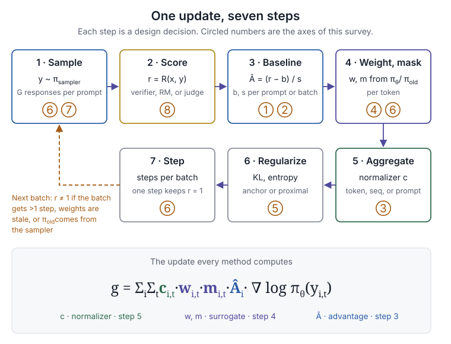
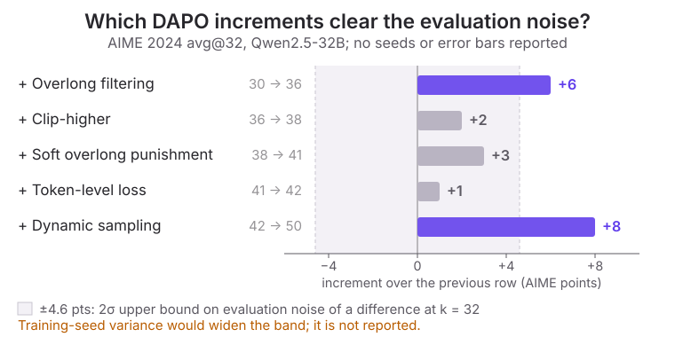
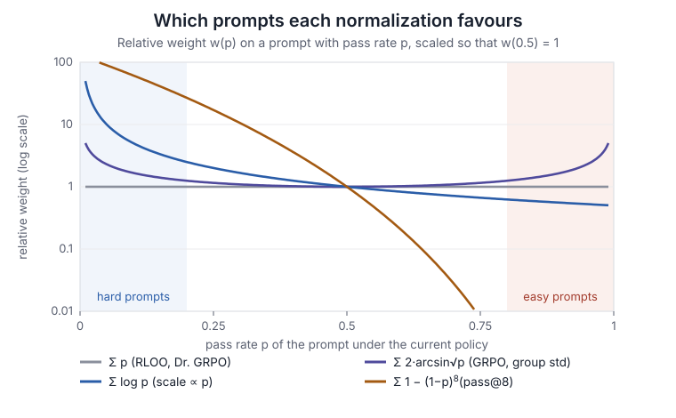
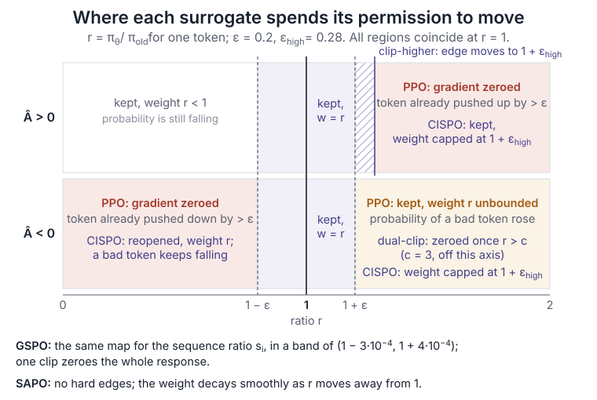
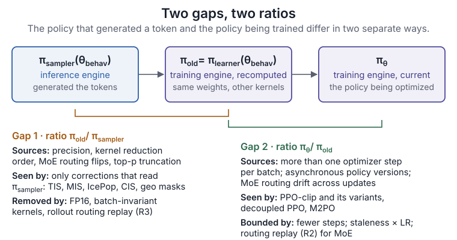
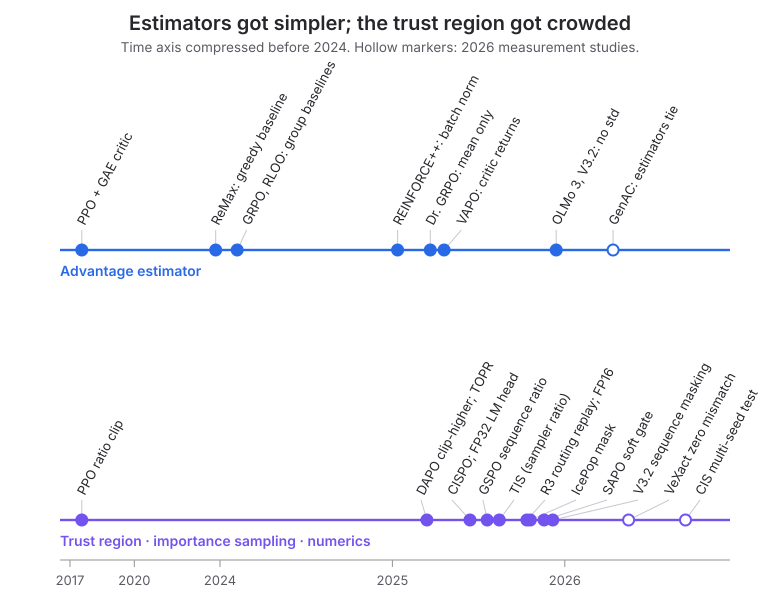
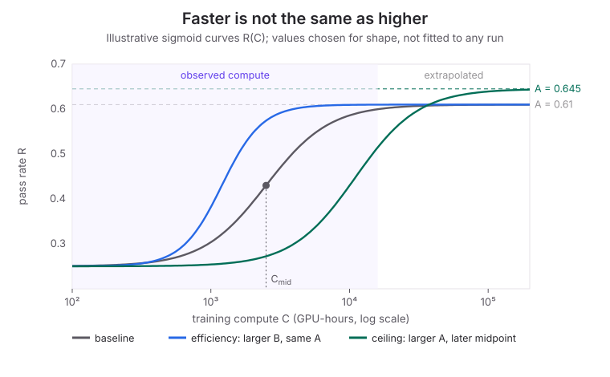
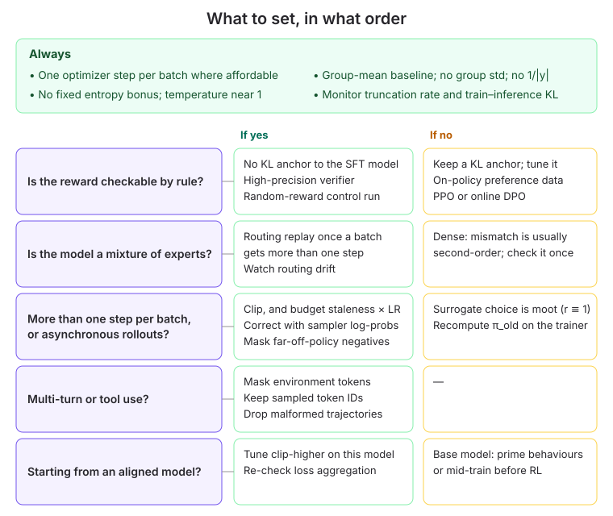

RL Algorithms for the Mathematically Inclined
Which changes to LLM post-training actually matter — and how to tell. Eight design axes of the policy-gradient estimator, three algorithm families (preference optimization · process rewards · agentic multi-turn), five evidence case studies, six recurring patterns, a researcher's checklist, a decision guide, and twelve small experiments. Every verdict is stated on four dimensions — ceiling, efficiency, stability, side effects — and graded by the strength of its controlled evidence. A companion to RL Infrastructure for the Mathematically Inclined.
Preface: what this survey is for
This survey is for theorists, mathematicians and algorithm researchers who read RL post-training papers and want to know which of the changes they propose actually matter. Since 2024 the field has produced a long list of named algorithms — GRPO, DAPO, Dr. GRPO, GSPO, CISPO, SAPO, VAPO and many more — each reporting gains. Most of those gains were measured once, on one model family, against a baseline configured by the same authors. The goal here is to sort the changes by what they do to training and by how strong the evidence is that they do it.
The organizing idea is to separate the name from the estimator. A name is what a paper's abstract reports: "we use GRPO", "we propose a new clipping objective". The estimator is what the training run actually computes: a gradient estimate whose form depends on a handful of choices — how the advantage is baselined and scaled, how token gradients are weighted and masked, how they are summed, what is regularized, and how far the data has drifted from the policy being trained. Add the experimental conditions — base model, data, evaluation — and you have what a result actually depends on. Two papers using "the same algorithm" can differ on most of these; two papers with different algorithm names can differ on one.
The boundary of this survey follows from that. If a choice can change the reward curve, the comparison between two methods, or whether a result reproduces, it is examined here, with its mechanism written as a formula and its evidence graded. Engineering detail that does not change the estimator is left to the companion RL infrastructure survey, which asks the mirror question: which systems choices silently change the statistical object being optimized.
Implementation details can matter more than the choice of algorithm itself. — paraphrasing Engstrom et al., Implementation Matters in Deep Policy Gradients (2020), whose conclusion this survey finds again for LLMs
The short answer, defended in the rest of the survey:
- Most named changes buy efficiency or stability, not a higher ceiling. In the one study that separates the two, removing any single component of a strong recipe leaves the fitted asymptote within noise (ScaleRL).
- The ceiling is mostly set outside the loss: by the base model and its mid-training, the generation budget, the batch size, and whether the reward can be fooled (base models, axis ⑦, axis ⑧).
- What decides whether training works is correctness: keeping the estimator what it claims to be — limited reuse of each batch, consistent numerics between sampler and trainer, routing replay for mixture-of-experts models, masking tokens the policy did not write (verdict map, agentic RL).
After reading, you should be able to take any new RL paper and ask five questions before its results: which slot of the estimator did it change; was the run on-policy, and if not, how far off; on which base models; against how carefully tuned a baseline; and with how much noise in the evaluation. Those questions are the bridge from an abstract's claim to the evidence behind it.
How to read this survey
The survey is a map, not a catalogue. It starts from one gradient estimator (the skeleton) and one account of why measuring its improvements is hard (the measurement problem), then judges each slot of the estimator in turn. The short path is the skeleton, the measurement problem, the verdict map, the six patterns and the decision guide. The long path adds the axis sections, the three algorithm families, the five case studies, and the closing chapters on code, pitfalls and open questions.
Three kinds of reader should expect different things from it.
User story: interpretation. As a researcher reading a new RL paper, I want to know whether its gain could come from the change it proposes, so that I can tell a result about an algorithm from a result about a base model, a baseline or an evaluation setup. The checklist and the case studies are written for this reader.
User story: decision. As a practitioner configuring a run, I want to know which settings must be right, which are safe defaults, and which need tuning on my own model, so that I spend effort where it changes the outcome. The decision guide, code walk-through and pitfalls are written for this reader.
User story: research. As a theorist, I want to find where the evidence is thinnest and a precise statement would settle a debate, so that my work changes what the field believes. The patterns, experiments and open questions are written for this reader.
How verdicts are stated
Every change is judged on four dimensions, because a change can matter in one and not another:
- Ceiling — does it change where training ends up with enough compute?
- Efficiency — does it get there with less compute?
- Stability — does it change the chance that a long or large run collapses?
- Side effects — does it change response length, entropy, format, or what the model forgets?
Each verdict carries an evidence grade:
- A several independent controlled studies agree.
- B one controlled study, or a clear mathematical mechanism.
- C only the paper that proposed it.
- D the evidence contradicts itself.
A single change can carry two grades for two different claims — for example, "does not move the ceiling" (A) and "helps efficiency in this direction" (D).
Two meanings of "ceiling"
The word is used in two senses that behave differently under RL, and the survey keeps them apart. The pass@1 asymptote is how accurate one sample becomes after training converges; RL usually raises it. Coverage at large k is the set of problems the model can solve at all given many attempts; RL often leaves it unchanged or shrinks it (what RL changes).
About the sources
Every number quoted in the survey was checked against the primary source — the paper's full text, the official blog or report, or the framework's code at a stated commit — and where a number exists only in a figure, or a claim only in an abstract, the text says so. Evidence is current as of October 2026. Several 2026 results are recent enough that no one has yet tried to reproduce them; they are graded accordingly.
The skeleton: one gradient estimator, three knobs
The simplest useful map of RL post-training algorithms is not a list of names. It is the one quantity they all compute: a gradient estimate from a batch of sampled responses. Every method in this survey writes that estimate in the same form and differs only in what it puts into three slots. Reading a new paper therefore comes down to two questions: which slot did it change, and can that slot matter in the regime where the paper ran its experiments?

One update, seven steps
One update takes a batch of prompts and returns a parameter change. Each of its seven steps is a decision, and each decision is one of the design axes judged later in the survey.
| Step | What is decided | Axis |
|---|---|---|
| 1 · Sample | Which policy generates the responses, how many per prompt (G), at what temperature. The generator is the inference engine's copy of the policy, πsampler, which need not match the trainer's copy numerically. | ⑥ ⑦ |
| 2 · Score | Which reward r(x, y) each response receives: a rule-based verifier, a learned reward model, or a judge. | ⑧ |
| 3 · Baseline | How the reward becomes an advantage Â: which baseline is subtracted and which scale divides it. | ① ② |
| 4 · Weight, mask | How each token's gradient is reweighted or zeroed, as a function of the probability ratio between the current policy and the policy at the start of the update. | ④ ⑥ |
| 5 · Aggregate | How per-token terms are summed: per token, per sequence, per prompt, or with a constant. | ③ |
| 6 · Regularize | Which KL or entropy terms are added. | ⑤ |
| 7 · Step | How many optimizer steps the batch receives before new data is sampled. | ⑥ |
Steps 1 and 2 sit outside the loss function. That is why data and reward get their own axes (⑦, ⑧) rather than being treated as experimental setup: as the next section and the layer beneath the loss show, they move results more than most loss changes do.
Three knobs
Steps 3–5 fill the three slots of one expression. Every method in this survey computes
Notation. i indexes the responses in the batch and t the tokens of response y_i. πθ is the policy being optimized. πold is the same network at the start of the update; its log-probabilities are computed once, before the first optimizer step. πsampler is the inference engine's copy that actually generated the tokens. The probability ratio is ri,t = πθ(yi,t | ·) / πold(yi,t | ·).
- Âi, the advantage (step 3). With outcome rewards it is one scalar per response; a learned critic makes it per-token, Âi,t.
- wi,t · mi,t, the surrogate (step 4). The weight
wrescales a token's gradient; the maskm ∈ {0, 1}removes it. This is the slot where PPO, DAPO, GSPO, CISPO and SAPO differ. - ci,t, the normalizer (step 5). It fixes how much each token counts relative to the others: 1/(G·|yi|), 1/Σj|yj|, or a constant.
The surrogate slot is easiest to read off the gradient, not the loss. PPO's per-token objective is ri,t·Âi, and ∇r = r·∇log π, so an unclipped token contributes with weight w = r. Clipping does not shrink the weight; it sets the mask to zero once the ratio has moved far enough in the direction the advantage favours. The other surrogates change one of these two rules.
| Surrogate | Weight wi,t | Mask mi,t = 0 when |
|---|---|---|
| PPO-clip | ri,t |  > 0 and r > 1+ε, or  < 0 and r < 1−ε |
| DAPO (clip-higher) | ri,t | Same rule with εhigh > εlow on the upper side |
| CISPO | sg(min(ri,t, 1+εhigh)), a stop-gradient weight; MiniMax-M1 effectively disables the lower bound | Never; the clipped weight replaces the mask |
| GSPO | si = exp((1/|yi|) Σt log ri,t), shared by all tokens of the response | For the whole response, when si leaves its band (1 − 3·10−4, 1 + 4·10−4) in the advantage's direction |
| SAPO | ri,t · 4p(1 − p) with p = σ(τ(ri,t − 1)), a smooth gate | Never hard-masked; the gate decays instead |
The r ≡ 1 identity
The surrogate slot only acts through the ratio. That makes one condition decisive.
Identity. Suppose each rollout batch receives a single optimizer step and πold is computed by the trainer at the current parameters. Then ri,t = 1 for every token when the gradient is taken, and PPO-clip, DAPO, GSPO, GMPO, CISPO and SAPO all return
That is REINFORCE with a baseline. The six surrogates then differ only in c and Â, plus whatever regularizer step 6 adds — GRPO's KL term, for instance, still contributes β(πref/πθ − 1) per token.
The check is one line per method:
- PPO-clip, DAPO: 1 lies inside [1−εlow, 1+εhigh], so no token is masked and w = r = 1.
- CISPO: min(1, 1+εhigh) = 1, so w = 1.
- GSPO, GMPO: without clipping both optimize the geometric mean of the token ratios times Â; they differ only in where the clip acts (whole sequence vs per token in log space). At ratios equal to 1 the mean is 1, so w = 1, and the 1/|yi| from differentiating the mean moves into
c. - SAPO: p = σ(0) = ½, so 4p(1 − p) = 1 and w = 1, whatever the temperature τ.
What remains is the normalizer. At r = 1 the table of differences is short:
| Method | ci,t at r = 1 | Consequence |
|---|---|---|
| GRPO, GSPO, GMPO, SAPO | 1/(G·|yi|) | Each response counts equally; long responses get less weight per token |
| DAPO, CISPO | 1/Σj|yj| | Each token counts equally within the normalizing group |
| Dr. GRPO | A constant (1/G in the paper's formula; the released code divides by a fixed MAX_TOKENS) | No length dependence at all |
The ratio leaves 1 for exactly two reasons:
- More than one optimizer step per batch. Minibatch
kis evaluated at the parameters left by the previousk − 1steps. The step count is often a silent default: verl's stock configuration (train_batch_size = 1024,ppo_mini_batch_size = 256) takes four steps per batch. Asynchronous rollout adds whole policy versions of staleness on top (see the infra survey's async section). - πold taken from the sampler. If the loss uses the inference engine's log-probabilities instead of recomputing them on the trainer, then r = πθ/πsampler already on the first step, and the ratio carries the train–inference mismatch.
The second point has a consequence that is easy to miss. When πold is recomputed on the trainer — the standard setup, and the one the infra survey recommends — the ratio starts at exactly 1 no matter what πsampler did. The train–inference mismatch is then invisible to every surrogate in the table: all six are biased by it in the same way. Only corrections that read πsampler explicitly, such as truncated or masked importance sampling, can see it (axis ⑥).
Reading rule. A gap between two of these surrogates, measured with one optimizer step per batch and a recomputed πold, cannot come from the surrogate. It comes from the normalizer, the advantage, or noise. A gap measured with many steps per batch measures how each surrogate copes with that run's staleness. It is a property of the run, not of the loss alone.
None of the papers that introduced these surrogates trained at r ≡ 1 in its own experiments. DAPO takes 16 gradient updates per rollout step, MiniMax-M1 (CISPO) 16, GMPO 8, and GSPO and SAPO split each rollout batch into 4 minibatches. Their reported gains are therefore gains under staleness, and the reported rankings of these losses contradict each other across papers (axis ④). That is what this rule predicts if the papers ran at different staleness levels. Experiment 1 tests the prediction directly.
Two qualifications keep the identity honest. It holds up to the trainer's own numerical nondeterminism: recomputing log-probabilities twice with batch-dependent kernels can give ratios that differ from 1 in the last bits. And it says nothing about the optimizer: with Adam, the overall scale of c is largely absorbed, so normalizers matter mainly through the relative weight they give different responses (axis ③).
Names as knob settings
With the three slots fixed, a named algorithm becomes a row of settings. Most names change one or two cells.
| Method | Â (step 3) | w, m (step 4) | c (step 5) | Regularizer (step 6) |
|---|---|---|---|---|
| PPO for RLHF | GAE from a learned critic, per token | PPO-clip, ε = 0.2 | Token mean | KL to the SFT model, added to the reward |
| RLOO | ri − mean of the other G−1 rewards | None (one step per batch) | Whole sequence, no length division | KL in the reward |
| GRPO | (r − group mean) / group std | PPO-clip | 1/(G·|yi|) | k3 KL estimator in the loss, β = 0.04 |
| Dr. GRPO | r − group mean | PPO-clip | Constant | — |
| DAPO | (r − group mean) / group std | PPO-clip with εlow = 0.2, εhigh = 0.28 | 1/Σj|yj| | None |
| GSPO | (r − group mean) / group std | Sequence ratio si, sequence mask | 1/(G·|yi|) | — |
| CISPO | (r − group mean) / group std | Clipped stop-gradient weight, no mask | 1/Σj|yj| | — |
A dash means the paper does not make the choice part of the method. Dr. GRPO's advantage equals RLOO's times (G−1)/G, so the two rows differ only in the surrogate and the normalizer. Two things stand out. The advantage column has nearly converged: a group mean, with or without dividing by the group's standard deviation. The surrogate column holds most of the named innovations of 2025 — and by the identity above, that column only acts when the run is off-policy. The algorithm landscape extends this table to about twenty-five methods. The axis sections ask which cells can move results, and how strongly the evidence says so. Before that, one more ingredient is needed: a way to tell whether a change helped at all.
Why the estimator is not enough: the measurement problem
The skeleton tells you what a method changes. It does not tell you whether the change helped. That judgement rests on a measurement, usually a benchmark score after training. In LLM RL that measurement is noisier, more confounded and less comparable across papers than the gains it is asked to detect. This section sizes the four confounders that matter most, then explains why "raises the ceiling" is the hardest claim of all to establish. Every verdict in the axis sections has been passed through both filters.
Three layers of noise
A reported score carries three kinds of variation. They have different causes, different sizes and different remedies, and papers rarely separate them.
Evaluation sampling noise is the part you can compute. Take a fixed trained model that solves problem j with probability pj. Estimate pass@1 on n problems with k samples each. The estimate's variance is
AIME has n = 30 problems, so one problem is worth 3.3 points. The bound gives the following noise floor, as a worst case at pj = ½. It is the noise floor for comparing two models evaluated independently.
| Samples per problem k | Std of one score (pts) | Std of a difference (pts) | 2σ of a difference (pts) |
|---|---|---|---|
| 1 | 9.1 | 12.9 | 25.8 |
| 4 | 4.6 | 6.5 | 12.9 |
| 16 | 2.3 | 3.2 | 6.5 |
| 32 | 1.6 | 2.3 | 4.6 |
| 64 | 1.1 | 1.6 | 3.2 |
Real models have many problems with pj near 0 or 1, so the true noise is below this bound. The order of magnitude still holds. A single-sample AIME score cannot separate two methods that differ by less than about 26 points. At k = 32, the threshold falls to about 5.
Training-seed variance is the part almost nobody measures. Two training runs with different seeds produce two different models, and no number of evaluation samples removes that difference. The few direct measurements are scattered: ScaleRL's three repeated runs put the fitted asymptote within ±0.015 of each other on its pass-rate scale (2510.13786); LOOP reports 66.4 ± 4.8 on AppWorld across three runs (2502.01600); WPO reports its DPO baseline at 20.6 ± 0.7 AlpacaEval LC over five seeds (2406.11827). Most ablation tables in this literature come from one run per row, so this layer is simply unknown for them.
Evaluation configuration shifts scores systematically rather than randomly. Hochlehnert et al. re-evaluated published reasoning models and found that changing the sampling temperature moves AIME scores by up to about 15 points, top-p by up to about 8, and the hardware cluster by up to about 8; switching evaluation framework moved one model by 4.5 points and another by none (2504.07086). Within one paper these offsets cancel if the setup is held fixed. Across papers they do not, which is why numbers copied from another paper's table make poor baselines.

Figure 2 applies the bound to the most-cited ablation table of 2025. DAPO trains Qwen2.5-32B and reports avg@32 on AIME 2024; the table gives no seeds or error bars, so each row reads as a single training run (2503.14476, Table 1). Two increments, overlong filtering (+6) and dynamic sampling (+8), clear the evaluation band. The other three (+1 to +3) do not. That does not show those components are useless. It shows this table cannot establish them, and the axis sections look for other evidence before grading them.
Base model, template and contamination
The second confounder is often the largest, and it concentrates in one model family. Qwen2.5-Math is the most common base model in 2025 RL papers, and it responds to almost any training signal.
- Template. Before any RL, the same Qwen2.5-Math-7B averages 0.0 over five math benchmarks with the R1 prompt template, 26.5 with the Qwen template and 38.2 with no template (Dr. GRPO, 2503.20783, Table 1).
- Reward content. On MATH-500, RL with the true reward improves Qwen2.5-Math-7B by 29.1 points, with deliberately wrong labels by 24.1, and with random rewards by 21.4. The same random rewards make Llama3.1-8B-Instruct (−11.5) and OLMo2-7B (−8.3) worse (Spurious Rewards, 2506.10947).
- Contamination. Given the first 60% of a MATH-500 problem, Qwen2.5-Math-7B reproduces the rest exactly 54.6% of the time; Llama3.1-8B does so 3.8% of the time (2507.10532). OLMo 3, whose pre-training data is decontaminated and public, ran random rewards as a negative control and saw no gain (2512.13961).
Read together, these say that on Qwen2.5-Math a large part of any RL gain is elicitation of behaviour the base model already has. A method's gain there is an upper bound on what it does elsewhere until it is reproduced on another family. Even the direction of an effect can depend on the starting point: in a controlled study on Qwen3, the better loss-aggregation mode and the usefulness of clip-higher both flipped between the base and the instruction-tuned model (Tricks or Traps, 2508.08221). Section Base models and the ceiling takes this up in full.
Baselines and implementations
A gain is measured against a baseline, and the baseline is often the least-tuned run in the paper.
- VC-PPO and VAPO report large gains over a vanilla PPO baseline that scores 5.6 on AIME in VC-PPO and 5 on AIME 2024 in VAPO. That baseline uses GAE with λ = 0.95 and a critic initialized from the reward model. The axis section on advantages shows that this is a known failing configuration for long chains of thought (2503.01491, 2504.05118; axis ①).
- DPO on Mistral-7B, with UltraChat SFT and UltraFeedback preferences, scores 15.1 AlpacaEval LC in the SimPO paper and 20.6 ± 0.7 over five seeds in the WPO paper. The two SFT starting points differ by about one LC point (8.4 vs 9.5), much less than the 5.5-point spread in their DPO results. A margin of a few points over "DPO" depends on whose DPO (2405.14734, 2406.11827).
- Framework bugs move baselines too. TRL's IPO loss once summed where it should have averaged, which made IPO look worse than DPO until it was fixed (Hugging Face, 2024). A 2026 paper reports, in its abstract, that an optimizer-offload bug and a loss-aggregation bug depressed the SFT baselines of several mixed-policy papers (2604.23747).
Compute accounting and reporting
"Faster" usually means fewer optimizer steps, not less compute. Methods that add work per step look better under step counting than under GPU-hours. PRIME's own timing table gives 680 s per step against 531 s for its RLOO baseline, 28% more (2502.01456, Table 2). TreeRL trains on 480 responses per update against its baseline's 256 (2506.11902; see process rewards). Stability claims have a parallel problem: several papers report the best checkpoint within a window rather than the final one, which hides late collapse.
The ceiling is the hardest claim
The strongest claim a method can make is that it raises the asymptote — the score training converges to with unlimited compute — rather than reaching the same score faster. Only one study measures this directly. ScaleRL fits each run's pass rate R against compute C with a sigmoid,
and reads A as the asymptote and B as the efficiency (2510.13786). Three facts limit how far A can be trusted:
- Repeated runs place A within ±0.015 of each other, and the authors recommend treating differences under ±0.02 as noise. B has no error estimate at all.
- Within the fitting window, a log-linear curve with no asymptote fits about as well as the sigmoid: on Qwen3-14B-Base the two are "often nearly indistinguishable" over the fitting range (2610.04158, §6.1). A is extrapolated, not observed.
- A run that becomes unstable and is cut short fits as a run with a low asymptote. Instability can therefore masquerade as a lower ceiling.
This survey therefore applies one asymmetric rule. A verdict of "affects efficiency only" is more reliable than "raises the ceiling". Differences in A below about 0.02–0.03 are reported as unresolved. The ceiling also has a second meaning, coverage at large k (pass@k), which behaves differently and is treated in what RL actually changes.
The four filters
| Confounder | Typical size | What to ask of a paper |
|---|---|---|
| Evaluation noise | Up to ~26 pts (2σ, difference) on AIME at k = 1; ~5 at k = 32 | Samples per problem, number of training seeds, confidence intervals |
| Base model and contamination | Random rewards +21 on Qwen2.5-Math; template 0 → 38 | A second model family; a random-reward control; a post-cutoff benchmark |
| Baseline and implementation | 5.5 LC between two papers' DPO on the same recipe | Was the baseline tuned as hard as the method, and in the same code? |
| Accounting and reporting | +28% time per step; 480 vs 256 responses | GPU-hours, not steps; final, not best, checkpoint |
None of this makes the literature useless. It sets the grade a result can earn. A single-run increment smaller than the evaluation band is at best grade C. Agreement across independent controlled studies, on more than one model family, is what earns A. The checklist turns these filters into twelve questions. The axis sections apply them one design choice at a time, starting from the map of all eight axes.
Eight design axes worth judging
The next eight subsections take the slots of the skeleton one at a time. Each follows the same template: what the knob changes, written as a formula; the mechanism; the controlled evidence, filtered through the four confounders; a verdict on ceiling, efficiency, stability and side effects with an evidence grade; and what is mathematically interesting. The map below collects the headline verdicts so the overall shape is visible before the details.
| Axis | Change | Verdict | Ceiling | Effic. | Stability | Grade |
|---|---|---|---|---|---|---|
| ① | λ = 1 in PPO for long chains of thought | required | ↑ | — | ↑ | A |
| ① | Tuned critic vs group baseline | same ceiling; critic costs more | ○ | ↑ | — | D |
| ② | Group std normalization | changes the objective, not the ceiling | ○ | ◐ | ◐ | A D |
| ③ | Remove the 1/|y| length factor | removes a length bias | ◐ | ◐ | ↑ | B D |
| ④ | Ratio clipping when reusing samples | required once N > 1 | — | ↑ | ↑ | B |
| ④ | Clip-higher | raises entropy; score gain varies | ◐ | ○ | ◐ | B D |
| ④ | CISPO or GSPO instead of PPO-clip | rankings conflict | ◐ | ◐ | ◐ | B D |
| ⑤ | Drop the KL to the starting model | safe with verifiable rewards | ○ | ↑ | — | B |
| ⑤ | Fixed entropy bonus | inert or explosive | ○ | ○ | ↓ | A |
| ⑤⑥ | Several optimizer steps per batch | collapses entropy | ◐ | ↑ | ↓ | A |
| ⑥ | Remove train–inference mismatch at source | fixes the cause; ties corrections on short dense runs | ↑ | ↓ | ↑ | B |
| ⑥ | Routing replay for MoE | prevents off-policy collapse | ↑ | ○ | ↑ | A |
| ⑥ | Token-level TIS alone | delays collapse at best | ○ | ○ | ◐ | D |
| ⑦ | Larger batch; longer generation budget | raise the asymptote | ↑ | ↓ | ↑ | B |
| ⑦ | Zero-variance and difficulty filtering | efficiency and stability | ○ | ↑ | ↑ | B |
| ⑦ | Overlong masking or penalty | depends on the length budget | ○ | ◐ | ◐ | D |
| ⑧ | High-precision verifier | first-order | ↑ | — | ↑ | B |
| ⑧ | Label-free rewards | sharpen a strong prior, then fail | ◐ | — | ↓ | B D |
Three things stand out on the map.
- Few changes move the ceiling, and none of them is a new loss. The up-arrows in the ceiling column are λ = 1 for PPO, batch size, generation length, removing train–inference mismatch, routing replay on MoE, and a verifier that cannot be fooled. Most are about the quality of the estimate or the data, not the form of the objective.
- The A grades are mostly about not breaking training. λ = 1, one step per batch, no fixed entropy bonus, routing replay: each says "do not make the estimator something other than what it claims to be."
- On the surrogate axis, no general gain survives. Its named losses earn B only for narrow settings and D as general claims. That is what the r ≡ 1 identity predicts: those methods only differ off-policy, and papers rarely report how off-policy they were.
① Advantage and baseline
The advantage slot decides how a response's reward is turned into a learning signal: which baseline is subtracted, and whether a learned critic supplies it. It is the oldest axis — PPO with a value network against REINFORCE-style methods — and the one where the evidence is most settled. Once the basics are right, the choice of estimator barely moves the final score. What it does move is cost, and, for PPO, whether training works at all.
What the knob changes
Almost every critic-free estimator in use has the form Âi = (ri − b(x)) · w(x): a per-prompt baseline b and a per-prompt scale w. The baseline keeps the gradient unbiased only if it does not depend on the response it is subtracted from. A group mean includes ri itself, which shrinks the advantage by a factor (G−1)/G; leave-one-out removes it. The two are therefore the same estimator up to a constant: RLOO's advantage is exactly Dr. GRPO's times G/(G−1), as Dr. GRPO's appendix derives (2503.20783). ReMax subtracts the reward of the greedy response instead (2310.10505). That is unbiased, but with binary rewards it gives a correct sample zero signal on every prompt the greedy decode already solves. The scale w is axis ②.
PPO's critic works differently. Generalized advantage estimation (GAE) mixes the critic's value predictions with observed rewards, controlled by λ. With an outcome reward at the last token T, the reward reaches token t only through a factor λT−t. For λ = 0.95 and a chain of thought a few thousand tokens long, the early tokens receive essentially nothing from the reward; their advantage is whatever the critic says. At λ = γ = 1 the advantage is simply R − V(st): the critic becomes a state-dependent baseline, and its only job is variance reduction.
VAPO's length-adaptive λ = 1 − 1/(αℓ) with α = 0.05 sits in between (2504.05118). For a response of ℓ = 8,000 tokens, λ ≈ 0.9975, an effective horizon of about 400 tokens; the final reward reaches the first token with weight λ8000 ≈ e−20. So for long responses, VAPO's early-token advantages come almost entirely from the critic's bootstrapped values. That makes it a genuinely critic-dependent estimator, unlike PPO at λ = 1. (The arithmetic is ours.)
Evidence
λ = 1 for long chains of thought. Four independent sources agree. The RLOO paper found λ = 1 best for PPO on Anthropic HH (2402.14740). DeepSeek-R1's appendix reports PPO with λ = 0.95 well below GRPO and PPO with λ = 1.0 close to it (2501.12948). Open-Reasoner-Zero trains PPO with λ = γ = 1 and reports that λ = 0.95 led to collapsing response length (2503.24290). In its 8k-context ablations, VC-PPO lifts vanilla PPO from 5.6 to 41.9 on AIME, largely by decoupling the critic's λ from the actor's (2503.01491). A
Critic versus critic-free. Here the original papers and the independent comparisons disagree.
- VAPO reports 60.4 on AIME 2024 against 50 for DAPO from the same team. But its PPO baseline sits on the failing configuration above — λ = 0.95 and a critic initialized from the reward model (case study).
- GenAC changes only the advantage estimator under a shared PPO-style loss on Qwen3-8B-Base for about 200 steps. GRPO, RLOO and VC-PPO land at 50.2, 49.9 and 50.4; over three seeds, VC-PPO 50.9 against GRPO 50.0. Value-based estimators learn faster early, and the gap shrinks with training. Per iteration, GRPO costs about 0.6× PPO and VinePPO about 4.3×. All methods share one hyperparameter setting (2604.10701).
- On Qwen2.5-Math-7B, a minimalist comparison puts REINFORCE at 53.9, PPO 52.5, GRPO 56.3 and rejection-filtered REINFORCE 56.4, and attributes GRPO's edge mainly to discarding prompts whose responses are all wrong or all right (2504.11343).
- Yue et al. reimplemented six algorithms (PPO, GRPO, REINFORCE++, RLOO, ReMax, DAPO) in one framework and found them close to each other (2504.13837).
The reading that fits all four: a properly configured critic buys early sample efficiency and costs memory and compute; it does not raise the ceiling of single-turn RLVR. Critic-free methods win on cost and on having fewer ways to be misconfigured. Frontier reports have converged accordingly. DeepSeek, Kimi, Qwen, MiniMax, Magistral and OLMo 3 all report critic-free group baselines; ByteDance Seed is the main exception. The case for a critic is stronger in multi-turn agents, where single-paper results exist (agentic RL).
Newer estimators — optimal-baseline, quantile, Kalman and maximum-likelihood variants of 2025–2026 — change b or w and report gains in their own papers only C. Their real content is usually the implicit objective they choose, which is the subject of the next axis.
| Change | Ceiling | Efficiency | Stability | Side effects | Grade |
|---|---|---|---|---|---|
| PPO with λ = 1 instead of 0.95 | Decisive against the broken setting | — | λ < 1 collapses response length | Length | A |
| Critic not initialized from the reward model; value pre-training | Decisive within PPO | — | Prevents early collapse | — | B |
| Tuned PPO vs GRPO or RLOO (single-turn RLVR) | Interchangeable | Critic faster early | — | Critic adds memory and compute | D original claims · interchangeable in independent tests |
| RLOO vs Dr. GRPO | Identical up to a constant | — | — | — | Exact (algebra) |
| ReMax greedy baseline | ≈ others | Saves memory vs PPO | — | Wastes signal with binary rewards | C |
| 2025–26 estimators (optimal, quantile, Kalman, max-likelihood) | Own gains | — | — | — | C |
What's mathematically interesting
The estimator debate reduces to one parameter: how much of the advantage at token t comes from observed reward and how much from a learned prediction. At λ = 1 the critic contributes only variance reduction, so it cannot bias the gradient and cannot raise the ceiling, which matches the evidence. At λ < 1 the critic contributes bias, and a poorly initialized critic contributes it exactly where the long chain of thought begins. The interesting regime, which nobody has tested cleanly, is the middle one: a critic good enough that bootstrapping helps credit assignment within a long response, rather than merely reducing variance across responses.
② Normalization: std changes the objective, not the ceiling
GRPO divides each advantage by the standard deviation of its group's rewards. Dr. GRPO removes that division; REINFORCE++ and ScaleRL divide by a batch-wide standard deviation instead. The debate over which is right has produced contradictory ablations. The contradiction resolves once you see what the division does: it does not make the gradient more accurate, it changes which objective the gradient ascends.
What the knob changes
With a binary reward, a prompt x with pass rate px contributes ∇px / s(px) to the expected update, where s is the scale the advantage is divided by (pattern 2). Each rule therefore ascends Σx F(px) for the F with F′ = 1/s:
| Rule | Weight on a prompt, w(p) = 1/s(p) | Objective ascended |
|---|---|---|
| RLOO, Dr. GRPO, batch std | constant | Σ p, the expected pass rate |
| GRPO (group std) | 1/√(p(1−p)) | Σ 2·arcsin√p |
| Scale ∝ p (maximum-likelihood weighting) | ≈ 1/p | ≈ Σ log p |
| Pass@k training | k(1−p)k−1 | Σ 1 − (1−p)k |

MaxRL's practical weight, (1 − (1−p)T)/p with T samples per prompt, approaches 1/p as T grows (2602.02710). Two consequences follow. First, a batch-level standard deviation is one scalar per step; it rescales the whole gradient and leaves the relative weight of prompts unchanged. Under Adam, which normalizes gradient scale anyway, its effect should be small, acting only through gradient clipping, the optimizer's ε, and how quickly its moment estimates adapt. Second, GRPO's group standard deviation is really two changes at once. It up-weights hard prompts (small p), as maximum-likelihood and pass@k weighting do on purpose. It also up-weights easy prompts (p near 1), which nobody argues for. A concrete case: in a group of eight with one success, GRPO gives the success an advantage of about +2.5 to +2.6, depending on whether the standard deviation divides by G or G−1, against +0.875 without the division. After zero-variance groups are filtered out, the worst case is p = 1/G, where the weight grows like √G.
Evidence
On the final score, the division does not matter. ScaleRL found prompt-level, batch-level and no normalization "similar" and chose batch-level as slightly better (2510.13786). Magistral saw no significant effect on evaluation or on length growth (2506.10910). The minimalist comparison found little gain beyond discarding all-wrong prompts (2504.11343). A for "does not move the ceiling".
On efficiency and stability, the direction depends on the data. Dr. GRPO's three-run comparison removes the standard deviation and the length normalization together; its single-factor ablations separate them but without repeats, and no statistical test is reported (2503.20783). Tricks or Traps finds removing the group standard deviation helps on easy data and is neutral on hard data, and recommends group-mean centering with a batch-level standard deviation (2508.08221). In agentic training, LOOP found that dividing by the standard deviation cost several points on AppWorld (2502.01600). D for direction. All of these are what the decomposition predicts: easy-heavy data is where up-weighting easy prompts hurts.
Practice has moved. OLMo 3 states it uses no standard-deviation normalization (2512.13961). Kimi and GLM-4.5's agentic stage subtract a mean only. DeepSeek-V3.2's advantage formula has no standard deviation, although its text says "normalizing" (2512.02556). ScaleRL, AReaL, REINFORCE++ and Magistral (per minibatch) use a batch-level standard deviation instead.
| Change | Ceiling | Efficiency | Stability | Side effects | Grade |
|---|---|---|---|---|---|
| Group std normalization (GRPO) | No effect | Direction depends on data | Amplifies easy prompts and small groups | Objective becomes Σ 2·arcsin√p | A ceiling · D direction |
| Batch std normalization | ≈ group std | ≈ | Possibly steadier gradient scale | Leaves the objective almost unchanged | B |
| Asymmetric up-weighting of hard prompts only (max-likelihood, pass@k) | Pass@k gains reported | — | — | Pass@1 effect unclear | C |
What's mathematically interesting
Every normalization rule is a choice of transform F of per-prompt pass rates, with F′ = 1/s. Maximum-likelihood and pass@k weighting give concave F; GRPO's 2·arcsin√p is concave below p = ½ and convex above it, which is exactly the easy-prompt up-weighting. The literature has been arguing about estimators when it should have been arguing about F. Σp maximizes the expected score. Σ log p is the maximum-likelihood objective, which refuses to give up on any prompt. Σ 1 − (1−p)k optimizes coverage at k samples. GRPO's Σ 2·arcsin√p has no such interpretation; it is a variance-stabilizing transform of a Bernoulli rate, inherited from dividing by a standard deviation. Which F best serves pass@1 after training, given that RL also changes which prompts are solvable, is an open question with a clean formulation (open questions).
③ Loss aggregation and the 1/|y| length bias
Aggregation decides how per-token losses are summed into one number, and so how much each token counts relative to the others. It looks like bookkeeping. One choice, dividing each response's loss by its own length, has a clear and documented side effect on response length. The rest of the empirical record on this axis is contradictory.
What the knob changes
| Mode | Weight per token | Consequence |
|---|---|---|
| Sequence mean of token means (original GRPO; forced by GSPO and SAPO) | 1/(G·|yi|) | Every response counts equally, whatever its length |
Token mean over a group or batch (DAPO, verl's token-mean) | 1/Σj|yj| | Every token counts equally; long responses carry more total weight |
| Sequence mean of token sums | 1/G | No length division; gradient variance grows with length |
| Constant normalizer (Dr. GRPO) | 1/G in the paper's formula; 1/(G·Lmax) in released code | No length dependence; the constant folds into the learning rate |
The 1/|yi| in the first mode is what creates the bias. For a correct response, a shorter one gets a larger update per token. For an incorrect one, a longer response is penalized less per token. So the loss quietly favours short correct answers and long wrong ones, and incorrect responses drift longer over training (Dr. GRPO, 2503.20783). Qwen's analysis of stable RL gives the same conclusion from another direction: the token-level objective is a first-order approximation of the sequence-level reward, and dividing by length breaks that approximation (2512.01374).
"Token-level" is also not one thing. DAPO's formula normalizes by the total tokens within each prompt's group, which ScaleRL classifies as a prompt-level average. verl's token-mean normalizes by the valid tokens in each PPO mini-batch, summed across data-parallel workers. When prompts differ in typical response length, these give different weights to different prompts.
Evidence
- DAPO's token-level loss adds one point (41 → 42), inside the evaluation band (Figure 2).
- Tricks or Traps, on Qwen3-8B, finds token-level aggregation better for base models and sequence-level better for instruction-tuned models (2508.08221).
- ScaleRL's prompt-level average had the highest asymptote in the isolated comparison, but removing it in the leave-one-out runs kept the asymptote within noise (2510.13786).
- GLM-4.5 reports token-weighted averaging as highly beneficial for code RL; the evidence is a figure from a smaller experimental model, showing faster convergence to a similar endpoint (2508.06471).
- MiniMax-M1 describes combining a sample-level loss with token-level normalization in its length-scaling stage, without giving the formula (2506.13585).
| Change | Ceiling | Efficiency | Stability | Side effects | Grade |
|---|---|---|---|---|---|
| Remove 1/|yi| (token-level or constant) | Unresolved | Possibly better on base models | Steadier lengths | Wrong answers stop drifting longer | B mechanism · D "token-level is better" |
| Prompt-level average (ScaleRL) | Highest alone, within noise in LOO | — | — | — | C |
What's mathematically interesting
Aggregation is the one axis where the right answer follows from the objective rather than from experiments. If the goal is the expected sequence reward, the policy gradient is Σt R · ∇log π(yt), a sum over tokens with no length factor. Any 1/|y| weight is a departure from that objective, and its sign of bias is predictable. The two length-free modes — summing tokens within each response (1/G) and Dr. GRPO's constant normalizer — are exactly the policy gradient up to a learning-rate constant. The empirical flips between base and aligned models then look less like evidence for one mode and more like interactions with other parts of the recipe, such as length budgets and truncation (axis ⑦).
④ Clipping, trust regions, and ratio granularity
This axis has more named algorithms than any other: PPO-clip, dual-clip, clip-higher, CISPO, GSPO, GMPO, SAPO, and a long tail of 2025–2026 variants. By the r ≡ 1 identity, it is also the only axis whose effect vanishes entirely when the run is on-policy. So two questions organize this section: what does each variant do to the gradient once r ≠ 1, and does the evidence separate the variant from the staleness of the experiments that tested it?

What the clip actually does
PPO's mask is one-sided by design. It zeroes a token's gradient once the ratio has moved in the direction the advantage wants by more than ε: up for good tokens, down for bad ones. It does nothing in the other two quadrants. A bad token whose probability has risen keeps a gradient with weight r, and nothing bounds that weight. Dual-clip exists to cap it, zeroing the gradient once r exceeds a constant c (verl's default is 3). No controlled LLM ablation of dual-clip on versus off was found.
The clip also has a built-in entropy bias, and it follows from the bound being relative. A good token with old probability pold may rise only to (1+ε)·pold, an absolute increase of ε·pold. For a rare token that is almost nothing. So positive updates on rare tokens are cut off early, while likely tokens absorb the probability mass, and entropy falls. The lower edge works the other way, protecting rare bad tokens from being pushed further down. A 2025 analysis finds that with the usual ε the upper edge dominates, so clipping lowers entropy even when the reward is random (2509.26114). This is the same bias the spurious-rewards paper proposes to explain random-reward gains on Qwen2.5-Math; that explanation is contested (case study).
The variants, by what they change
- Clip-higher (DAPO) raises only the upper edge for good tokens, from 1.2 to 1.28. It removes part of the entropy bias above.
- CISPO (MiniMax-M1) replaces the mask with a capped, stop-gradient weight, so no token is ever dropped. The motivation is specific: with 16 off-policy updates per batch, rare "reflection" tokens such as However and Wait were clipped after the first update and contributed nothing to the next fifteen (2506.13585). The cost shows in Figure 5: CISPO also reopens the quadrant PPO closed on purpose, where a bad token that has already been pushed down keeps being pushed.
- GSPO (Qwen) clips a single sequence ratio, the geometric mean of the token ratios, inside a band almost three orders of magnitude narrower than PPO's. One clip removes the whole response. It reintroduces the 1/|y| length normalization that Dr. GRPO argued against (axis ③). GMPO optimizes the same geometric mean but clips per token in log space.
- SAPO (Qwen) replaces the hard edges with a smooth gate that decays as r leaves 1.
- DCPO, CE-GPPO, ASPO, DPPO, DGPO and similar 2025–2026 proposals all reparametrize one complaint: a ratio clip permits too small an absolute step for rare tokens and too large a one for likely tokens. Each is supported by its originating paper only C, mostly on Qwen2.5-Math or R1-Distill-1.5B, under a thousand steps, without seeds. No study compares them in one controlled, multi-seed setting.
Evidence
Clip-higher. Its effect on entropy is reliable; its effect on scores is not.
- DAPO's own increment is +2 AIME points (36 → 38), inside the evaluation band of Figure 2.
- On Qwen3-4B and 8B, Tricks or Traps finds the upper clip fires on about 0.3% of tokens in base models, where raising it changes little or hurts. In instruction-tuned models it slows entropy collapse and helps: for the 4B model scores rise steadily up to the largest value tried (0.32), while the 8B model peaks at 0.28 (2508.08221). No seed variance is reported.
- The Entropy Mechanism paper measures +0.2 (Qwen2.5-7B) and +1.4 (32B) average points, with instability later in training (2505.22617).
- ScaleRL finds the asymptote A rises and then falls as εhigh grows (2510.13786).
- MiniMax-M1 found clip-higher less effective at 16 updates per batch, which is what led to CISPO.
One reading reconciles these. Clip-higher can only act on tokens whose ratio reaches the edge. How many do depends on how far the policy moves within a batch, which is set by staleness and learning rate. "Which models it helps" is then a proxy for "at what staleness it was tested".
CISPO. The rankings disagree. In ScaleRL's leave-one-out runs, swapping CISPO for the DAPO loss leaves the asymptote within noise and lowers the efficiency exponent B from 2.01 to 1.77; CISPO is also insensitive to its cap. On R1-Distill-Qwen-1.5B, CE-GPPO reports a five-benchmark average of 47.6 for CISPO against 54.3 for GSPO (2509.20712). In ARLArena's agentic tasks, CISPO averages 34.0 against GRPO's 46.2 and collapses around step 130; adding sequence-level masking restores it (ALFWorld 54.4 → 78.9; 2602.21534). The paper's diagnosis, run on SAPO, which collapses the same way, traces the failure to negative-advantage sequences with low ratios — the quadrant both methods reopen. Implementations also disagree with the paper: verl's cispo clips the weight to [0.8, 1.2] by default, whereas MiniMax-M1 effectively disables the lower bound. A "CISPO" result therefore needs its configuration checked before it is compared.
GSPO. The original experiments are on one MoE model, Qwen3-30B-A3B, where about 10% of activated experts change after a single update; there GSPO clips about 15% of tokens against GRPO's 0.13% and still trains more efficiently. A later controlled study from the same team, on the same model, neither tested GSPO nor needed it. On-policy, the most stable recipe was token-level policy gradient without length normalization plus a train–inference importance correction; off-policy, token-level clipping plus routing replay sufficed (2512.01374). Elsewhere GSPO ranks first in ARLArena, diverges repeatedly in ScaleRL, and ties the untrained base model on Qwen1.5-MoE in a three-seed comparison (28.90 ± 1.25 against 28.93; 2609.32444). Its benefit is plausibly specific to high staleness on MoE without routing replay — the setting it was designed for.
Clipping itself. Off-policy, removing clipping makes training collapse early (2512.01374). On-policy it has nothing to clip. DeepSeek-R1's first RL stage set ε = 10, which effectively disables it; the paper's stated reason is that a lower value truncated the gradients of too many tokens (2501.12948v2).
| Change | Ceiling | Efficiency | Stability | Side effects | Grade |
|---|---|---|---|---|---|
| Ratio clipping (when off-policy) | No evidence either way | Allows sample reuse | Required once N > 1 | Entropy-lowering bias | B |
| Dual-clip | — | — | Sound mechanism, no LLM ablation | — | C |
| Clip-higher | Non-monotone in εhigh | Small | Mixed | Entropy rises | B mechanism · D general gain |
| CISPO | Within noise in ScaleRL | Higher B in ScaleRL | Collapses in agentic RL without sequence masking | Reopens the  < 0, small-r quadrant | B efficiency in large-batch RLVR · D general |
| GSPO | Contested | Better on MoE in its own paper | Better on MoE without routing replay; diverges elsewhere | Length normalization; ε rescaled by ~103 | B MoE without replay · D general |
| GMPO, SAPO | — | — | SAPO collapses in agentic RL without sequence masking | — | C |
| DCPO, CE-GPPO, ASPO, DPPO, DGPO | Own gains | — | — | Mostly Qwen2.5-Math or 1.5B, no seeds | C |
What's mathematically interesting
A ratio clip is a one-sample test of how far the policy has moved, applied token by token. That framing explains the whole axis. The edge is relative, so the test is loose for likely tokens and tight for rare ones: hence the entropy bias and the family of reparametrizations. The test reads only πold, so it is blind to train–inference mismatch (r ≡ 1). And the sequence-level test GSPO applies — the geometric mean exp(meant log rt) — is a length-normalized log-likelihood ratio. The same statistic reappears in axis ⑥ as a filter for train–inference mismatch, under the name geometric rejection sampling. One quantity serves as a trust region in one literature and as a mismatch detector in the other, which suggests both are measuring the same thing: how far the data has drifted from the policy being trained.
⑤ KL and entropy regularization
Step 6 of the skeleton adds terms that are not driven by reward: a KL penalty that holds the policy near a reference, and sometimes an entropy bonus that keeps it from becoming deterministic. Both were standard in RLHF. Both have been largely dropped in reasoning RL. Whether that is safe depends on two distinctions the literature often blurs: which KL estimator is used and how, and whether the reference is the starting model or a recent copy of the policy.
KL estimators have different gradients
Write δ = πref/πθ for a sampled token. Three per-token estimators of KL(πθ‖πref) are common: k1 = −log δ, k2 = ½(log δ)², and k3 = δ − 1 − log δ. All three are reasonable estimates of the KL's value. Their gradients differ, because differentiating an estimator through the loss drops the score-function term that the true gradient contains (Tang & Munos, 2506.09477; 2510.01555):
| Usage | Expected gradient | Verdict |
|---|---|---|
| k1 as a loss term | E[∇log πθ] = 0 | Zero-mean noise; no regularization at all |
| k3 as a loss term (GRPO's choice) | ∇KL(πref‖πθ), the KL in the opposite direction | Biased relative to the stated objective |
| k2 as a loss term | ∇KL(πθ‖πref) on-policy | Correct |
| k1 subtracted from the reward | ∇KL(πθ‖πref) on-policy | Correct (the RLHF convention) |
Off-policy, the loss-term forms also need an importance weight, which is often omitted; DeepSeek-V3.2 multiplies k3 by πθ/πold for this reason (2512.02556). When the policy stays near the reference, δ ≈ 1 and the differences shrink: in a low-KL run on an 8B Llama 3 model on MATH, k3 as a loss tracked the correct gradient closely, while k1 as a loss was the least effective at controlling KL. Far from the reference, the choice decides the outcome: in 70B-to-8B on-policy distillation, k3 as a loss made little progress. (The papers name the estimators differently; we use the common k1/k2/k3 labels throughout.) Framework defaults mostly avoid the worst case. verl and slime ship with the KL loss off, and OpenRLHF and AReaL put k1 in the reward. But slime's default estimator, once the KL loss is switched on, is k1 — the form that does nothing — and SkyRL enables a k3 loss by default (pitfalls).
Anchor KL and proximal KL are different tools
A KL to the starting model limits how far training can move. For verifiable-reward reasoning, the evidence says that limit hurts or does nothing. Skywork-OR1 added a KL with β = 10−3 in its second stage and AIME24 stopped improving; every released model uses β = 0 (2505.22312). The Entropy Mechanism paper found a reference KL stabilized entropy but lowered performance (2505.22617). DAPO, Magistral, GLM-4.5, MiniMax-M1, ScaleRL, OLMo 3 and JustRL all drop it, mostly without an ablation. B
A KL to a recent policy is a proximal term, closer in spirit to a trust region. The systems that keep a KL all use it this way. DeepSeek-R1 uses k3 with β = 0.001 and replaces the reference with the current policy every 400 steps (2501.12948, v2; the first arXiv version omits these details). ProRL resets both the reference and the optimizer whenever validation stalls (2505.24864). Kimi k1.5 regularizes toward the previous iterate rather than the SFT model, with a KL term that its surrogate loss implements as a squared log-ratio (2501.12599). None of them ablates the term away. One study found a small KL term stabilized asynchronous training on Countdown that was unstable without it, while another task in the same paper did best with no KL (2512.21852). Whether proximal KL helps long or asynchronous runs is therefore open C.
With a learned reward model, the anchor still matters. InstructGPT used a KL coefficient of 0.02 and found the optimum around 0.01–0.02 (2203.02155). In a careful PPO replication, two 1B runs that drifted to a KL of about 50 and 85 scored higher on the RLHF reward, yet a judge preferred them over the human reference summaries less than 20% of the time (2403.17031). Gao et al. fit gold reward as d(α − β log d) with d = √KL, and found the KL penalty acts like early stopping: it moves a run along the curve rather than improving the curve (2210.10760). The anchor's job is to stop the policy from exploiting a reward model it can fool; a rule-based verifier is harder to fool, which is why the anchor is dispensable there.
Entropy: what drives it down, and what does not hold it up
For a softmax policy, one step of vanilla policy gradient changes entropy by approximately −η · Cov(log π, π · Â) over the tokens at a state (2505.22617). Entropy falls when the tokens that are already likely also have high advantage, so a policy that is mostly right on easy prompts sharpens fastest. Three findings follow from this, and they are among the best-supported on any axis:
- Reusing a batch for several optimizer steps collapses entropy. Skywork-OR1 and AceReason each found that more than one update per batch collapses entropy — in AceReason, two or four updates did so around step 100 — and that a single update avoids it (2505.22312, 2505.16400). Magistral saw performance degrade beyond two minibatches per batch. A This is the same off-policy dial as axis ⑥, seen from the entropy side.
- A fixed entropy bonus does not fix it. In the Entropy Mechanism paper, small coefficients did nothing and larger ones made entropy explode, with no setting beating the baseline. Magistral saw entropy fall on math data and explode on math plus code under the same bonus, and switched to adjusting εhigh. Skywork-OR1 replaced the fixed bonus with an adaptive one that switches on only when entropy drops below a target. A for the negative result.
- Low sampling temperature collapses it. At temperature 0.6, Skywork-OR1's entropy fell to near zero within about a hundred steps. B
Whether entropy predicts the final score is contested. The Entropy Mechanism paper fits reward as −a·eH + b, which implies a ceiling once entropy is spent. ScaleRL finds runs with nearly identical entropy trajectories reaching very different scores (2510.13786). D
| Change | Ceiling | Efficiency | Stability | Side effects | Grade |
|---|---|---|---|---|---|
| Drop the KL to the starting model (verifiable rewards) | Dropping it does not hurt; keeping it may cap | Saves the reference forward pass | — | Possibly more forgetting | B |
| Proximal KL or periodic reference reset | ? | — | May help long or async runs (untested) | — | C |
| KL with a learned reward model | Interior optimum | — | Prevents over-optimization, like early stopping | — | B |
| k3-as-loss vs k2-as-loss or k1-in-reward | Same at low KL | — | k3 biased at high KL | — | B math |
| Fixed entropy bonus | None | None | Explodes or does nothing | Strongly data-dependent | A negative |
| Several optimizer steps per batch | Lower at fixed budget | Faster per sample | Entropy collapse | Hidden off-policyness | A collapse |
| Adaptive entropy control, covariance-based clipping | Own gains | — | — | — | C |
What's mathematically interesting
Two things. The KL estimator story is a clean example of a general trap: an unbiased estimator of a quantity is not, in general, a loss whose gradient is an unbiased estimator of the quantity's gradient. The fix is either to put the estimate into the reward, where the score-function term is supplied automatically, or to choose an estimator whose pathwise gradient happens to be right. And the entropy covariance formula explains why two of the findings on this axis are the same result. Reusing a batch for several steps, and running at a low temperature, both raise the covariance between a token's current probability and its advantage. The first does it by letting the policy chase the same advantages repeatedly, the second by sampling mostly the tokens that are already likely.
⑥ Off-policy data and train–inference mismatch
Axis ④ asked how each surrogate behaves once the ratio leaves 1. This axis asks where that departure comes from, and what the corrections built for it actually estimate. The systems side — how rollouts go stale, how precision differs between engines — is covered in the infra survey's sections on async training and quantization. Here the object is the gradient estimator.
Two gaps, two ratios
Three policies are involved in every update. πsampler is the inference engine's copy at the behavior parameters, the one that generated the tokens. πold is the trainer's copy at the same parameters, recomputed before the update. πθ is the trainer's current policy. They define two gaps, and the two have different sources and different remedies.

- Gap 1, sampler vs trainer at the same weights. The engines use different kernels, reduction orders and sometimes precisions, and inference may truncate the vocabulary with top-p. In MoE models the router can also choose different experts. On Qwen3-30B-A3B, about 10% of routing decisions differ between training and inference, and 94% of tokens differ in at least one layer (R3, 2510.11370).
- Gap 2, behavior vs current weights. More than one optimizer step per batch, asynchronous rollouts several versions behind, and in MoE models routing that drifts between updates.
The hybrid frameworks therefore compute Ey∼πsampler[R · ∇log πθ], not the on-policy gradient. The PPO ratio πθ/πold never sees πsampler, so gap 1 goes uncorrected unless a correction reads the sampler's probabilities explicitly (Yao et al., 2025). verl's documentation calls treating the recomputed πold as the behavior policy, when the two differ, a critical implementation mistake.
The corrections, as estimators
Token-level truncated IS (TIS) multiplies each token's term by min(πold/πsampler, C). The cap bounds each token's variance amplification by C². The price is that it corrects the distribution of the action given the prefix, but not the distribution of the prefixes themselves, which were also generated by πsampler. The remaining bias grows with the horizon, quadratically in T times the largest per-token divergence in one analysis (Liu & Li, 2025).
Sequence-level IS weights the whole response by ρ(y) = Πt π(yt)/μ(yt). It is unbiased, but its variance grows exponentially in T. A back-of-envelope calculation shows how far that goes at reasoning lengths. If the per-token log-ratios are roughly independent with mean near 0 and standard deviation σ, then log ρ has standard deviation σ√T. For small divergences, KL ≈ ½σ², so R3's measured MoE mismatch of about 1.5·10−3 per token gives σ ≈ 0.055. At T = 16k, the standard deviation of log ρ is about 7: one standard deviation spans a factor of e7 ≈ 1,100 in either direction. Any cap then truncates most sequences, so a capped sequence weight is mostly a hard filter. This is our calculation, not a cited result.
Length-normalized filters are what work in practice. Geometric rejection sampling accepts a sequence when exp(meant log ρt) lies in a narrow band; DeepSeek-V3.2's off-policy sequence masking applies a similar mean log-ratio test (2512.02556). These are not importance corrections. They are length-invariant trust-region tests that discard data that has drifted too far, the same statistic GSPO clips in axis ④.
Two further design choices cut across all of these:
- Truncate or mask. Truncation (TIS, CISPO) keeps a bounded gradient from every token. Masking (IcePop, masked IS, M2PO) zeroes out-of-band tokens. The masked tokens are disproportionately rare and high-entropy, so masking has an exploration cost. One three-seed study found the lower side matters most: masking tokens whose ratio is small is harmless, but lifting their small weights upward cut the five-benchmark average on Qwen1.5-MoE from 34.8 to 6.0, below the 28.9 of the untrained base (CIS, 2609.32444).
- Which tokens are dangerous. Several independent designs converge on the same asymmetry: negative-advantage tokens that are far off-policy. TOPR truncates importance weights only for negative samples (2503.14286); DeepSeek-V3.2 masks only negative-advantage sequences that fail its test; M2PO constrains only tokens that clipping would act on (2510.01161). The same quadrant is where CISPO collapsed in agentic training (axis ④).
Routing replay fixes gap 1 and gap 2 for MoE by reusing recorded expert choices. R3 replays the inference engine's routing during training; R2 replays the trainer's own routing at the behavior parameters. Both change the objective slightly — the policy being trained becomes "πθ with routing frozen" — which is consistent with the finding that R3 gives no gain on-policy and that R2 beats R3 at low staleness (2512.01374).
Removing the mismatch at the source is the alternative to estimating around it: FP16 in both engines (2510.26788), batch-invariant kernels that make sampler and trainer agree bitwise (Thinking Machines, 2025; VeXact, 2605.14220), and the narrower fix of computing the LM head in FP32 (MiniMax-M1).
When mismatch decides the run
Mismatch-driven collapse is real, but how much it matters depends heavily on the setting.
- Decisive for MoE, long horizons, multi-turn agents and low-precision rollouts. On Qwen3-30B-A3B, GRPO crashed between steps 60 and 120 in three configurations; adding TIS to the configuration that crashed first moved its crash from step 60 to 105; runs with R3 stayed stable for the 180 steps reported (R3, best checkpoints, no seeds). A Ring-mini-2.0 baseline collapsed after 180–200 steps while IcePop and TIS held (2510.18855, appendix figure). With a zero-mismatch reference engine, MoE REINFORCE kept improving where the vLLM-based run degraded after about 280 steps (VeXact). Qwen's controlled study found that removing the train–inference correction on-policy causes rapid collapse with an entropy drop (2512.01374).
- Second-order for dense, short-context math RL. TIS gave no gain on R1-Distill-1.5B in BF16 (Yao et al.). The one multi-seed comparison of corrections, on three MoE models trained on GSM8K, found five-benchmark averages within about 1.6 points of each other for no correction, TIS, sequence-level variants, IcePop, GSPO, FP16 and CIS on Qwen3-30B-A3B, with the authors conceding that their margins over IcePop on individual benchmarks are within seed spread (CIS).
- Often an implementation or hardware pathology. In one investigation, sampler–trainer KL varied by more than an order of magnitude across GPU types; a run that failed on one type recovered when resumed on another; and disabling a vLLM attention optimization on A100 cut the mismatch by about two orders of magnitude (Liu & Li). Checking the mismatch metric is a cheaper first step than changing the estimator.
How much staleness is tolerable
Gap 2 is a dial, and its safe range has been measured several ways.
- Without correction, about one or two versions. Magistral reports degradation beyond two minibatches per batch and settled on one update per batch (2506.10910). In AReaL's 1.5B study (one run per setting), AIME24 stays within two points of the on-policy 42.0 up to two versions of staleness (2505.24298).
- With decoupled PPO or truncated IS, roughly four to eight. AReaL's decoupled objective recovers on-policy accuracy up to staleness 8; ScaleRL found off-policyness 4 and 8 equally good; PipelineRL reached the same reward about twice as fast. M2PO claims parity at staleness 256 with a second-moment mask; that is one group's best-checkpoint result C.
- A budget, not a count. A 2026 study on Llama-3.2-1B and 3B and Qwen3-8B finds that the largest stable learning rate scales inversely with the staleness S, so Sη is roughly constant at the stability boundary; its O(Sη) bias is an upper bound under regularity assumptions, and most of its sweeps use one seed per configuration (2607.01083). If that holds, tolerances quoted without a learning rate are not comparable. By that law, a run at η = 10−6 tolerates about three times the lag of one at 3·10−6.
Staleness also hides inside "synchronous" training: verl's stock configuration takes four optimizer steps per batch (the skeleton), so the last minibatch is three updates stale. Every framework surveyed ships the gap-1 corrections, but as of their May 2026 releases all of them leave them off in their stock configurations (verl's YAML and code defaults disagree; see pitfalls).
| Change | Ceiling | Efficiency | Stability | Side effects | Grade |
|---|---|---|---|---|---|
| Fewer optimizer steps per batch | Similar peaks once stable | Lower per sample | Higher; avoids entropy collapse | — | A |
| Remove mismatch at source (batch-invariant kernels, FP16) | ≥ IS variants in long or MoE runs; within noise of them in the multi-seed short-run test | Slower inference with batch-invariant kernels | Mismatch zero or near zero | Engineering cost | B |
| Routing replay (R2/R3) for MoE | Large gains where runs otherwise crash | Under 3% overhead | Prevents MoE collapse off-policy | Trains a frozen-routing surrogate; no on-policy gain | A MoE, multi-step |
| Token-level TIS | 0 to small | Neutral | Delays collapse; fails alone in long multi-turn runs | Prefix-distribution bias growing with T | D |
| Sequence or geometric masks | No gain on short tasks | Neutral | Highest peak among estimator fixes in long multi-turn runs, but unstable late | Discards long or rare samples | C stability · D ceiling |
| IcePop | Among the best in the three-seed comparison | Neutral | Stable; too narrow a band destabilizes | Masks rare, high-entropy tokens | B |
| FP32 LM head | Large in one forward ablation; little difference in the full recipe on the dense 8B; helps on the Scout MoE | Cheap | Did not prevent collapse in two independent reports | Fixes only the head | D |
| Decoupled PPO with a staleness bound | On-policy level up to ~8 versions | 2.77× wall-clock (1.5B) | Yes | One extra forward pass | B |
| In-flight weight updates (PipelineRL) | Unresolved; ScaleRL contradicts itself | About 2× | Fine up to lag 8 | Mixed-policy sequences | B efficiency |
What's mathematically interesting
Three things. First, the PPO ratio has a blind spot by construction: it is anchored to a recomputed πold, so it can see staleness but never the sampler. Every gap-1 correction is an attempt to put the sampler back into the estimator. Second, exact importance sampling is unusable at reasoning lengths for a quantitative reason, not a practical one: the log-weight's spread grows like √T. The corrections that survive are therefore length-normalized tests, which trade unbiasedness for a bounded, length-invariant filter. Nobody has yet measured that trade directly: no study compares the gradients these estimators produce against a high-sample reference gradient (Experiment 6). Third, if the Sη law holds, "staleness" is not a property of the data but of the data together with the step size. That is the form a theorist would expect from a first-order bias argument, and it suggests a tight bound is within reach (open questions).
⑦ Data and sampling
Step 1 of the skeleton decides what the update gets to see: which prompts, how many responses each, how long they may run, and what happens to the ones that are cut off. These choices sit outside the loss, so they rarely get algorithm names. They include two of the very few changes with measured effects on the asymptote, and several of the most contested tricks in the 2025 recipes.
What moves the asymptote
In ScaleRL's fits, two sampling choices clearly move A beyond its ±0.02 noise band (2510.13786):
- Batch size. Batches of 512, 768 and 2,048 prompts give A ≈ 0.605, 0.610 and 0.645 (read from a figure). Small batches look better early and are overtaken later, with nearly identical per-step entropy.
- Generation length. Raising the budget from 14k to 32k tokens lifts A from 0.610 to 0.645, while the compute needed to reach the curve's midpoint grows 4.4-fold (Cmid 2,542 → 11,272). This is the clearest case of trading efficiency for ceiling in the literature.
Group size is second-order: at fixed total batch, groups of 8, 16, 24 and 32 responses per prompt give A = 0.585, 0.610, 0.590 and 0.595, a 0.025 spread at the edge of the noise band, with no trend. B for all three.
Filtering: worth it for stability and efficiency
A group in which every response gets the same reward has zero advantage everywhere and contributes no gradient. Under token-mean normalization it still counts in the denominator, so it silently shrinks the effective step size by an amount that varies from batch to batch. Dynamic sampling and zero-variance filtering remove such groups and refill the batch, which keeps the effective sample count fixed.
- DAPO's dynamic sampling adds 8 AIME points, the largest single increment in its table, and DAPO notes it reaches the same performance in fewer steps without much change in wall-clock time (2503.14476).
- ScaleRL's main text credits zero-variance filtering with a higher asymptote, but its own leave-one-out run keeps A within noise without it.
- JustRL reaches strong 1.5B results with no filtering at all (2512.16649), and a 2025 study on Countdown found dynamic sampling unnecessary, in a figure (2512.07611).
- Refilling has a cost that depends on group size and model strength: one study measured 41% of samples surviving the filter at 16 responses per prompt and 62% at 512 (BroRL, 2510.01180).
Filtering by difficulty — dropping prompts the model already solves, or keeping a hard subset — follows the same logic, since a prompt's gradient signal is proportional to p(1−p). AceReason's hard subset beat its full set by a few points in a single run (2505.16400), and frontier reports nearly all filter this way. Difficulty labels from eight samples are noisy, though, so the filter is coarse. Verdict: B for stability and efficiency; D for accuracy gains.
Truncation and length: contested
When a response hits the length cap, what should its reward be? DAPO masks truncated responses out of the loss and adds a soft penalty near the limit, worth +6 and +3 points in its table. Every later test disagrees with some part of that.
- Tricks or Traps finds overlong filtering helps clearly at an 8k cap and much less at 20k (2508.08221).
- JustRL found that adding DAPO's overlong penalty made AIME24 plateau about five points lower and collapsed entropy.
- OLMo 3 found overlong filtering gave no consistent improvement (2512.13961).
- Skywork-OR1 describes the effect of masking truncated responses as a form of reward hacking, found no gain from masking at a 32k budget, and does not mask (2505.22312).
The reading that fits: masking truncated responses removes a noisy negative signal when the length budget is tight, and removes the only penalty on runaway length when it is not. One robust result is a diagnostic rather than a fix: in ScaleRL, truncation rates in the range of 10–15% preceded instability. D for truncation handling, B for truncation rate as a warning signal.
Length curricula — training short first, then long — split the same way. Skywork-OR1 and AceReason used them; GLM-4.5 found a single 64k stage better and multi-stage training irreversibly worse (2508.06471), and Polaris found a curriculum hurt Qwen3-4B. Sampling temperature splits too: Polaris raises it during training while Kimi K2 lowers it. Both are D and probably depend on the base model.
How much data
Small curated sets go a long way on Qwen-Math. LIMR's 1,389 selected prompts slightly beat its full 8,523 (2502.11886), and one-shot RLVR trains Qwen2.5-Math to large gains from a single example (2504.20571). On Llama-3.2-3B the same one-shot recipe barely moves the six-benchmark average (17.5 → 19.0). Read with pattern 3, this is what to expect if a few examples are mainly eliciting a strong prior. B on Qwen-Math, D in general.
| Change | Ceiling | Efficiency | Stability | Side effects | Grade |
|---|---|---|---|---|---|
| Larger batch | Raises A | Slower early | Steadier | — | B |
| Longer generation budget | Raises A | Much more compute to midpoint | — | — | B |
| Group size at fixed batch | Second-order | Hardware-dependent | — | — | B |
| Zero-variance filtering, dynamic sampling | Neutral in LOO | Fewer steps | Steadier effective batch | Refill cost depends on G | B · accuracy D |
| Difficulty filtering | Weak or unknown | Fewer steps | — | Forgetting of easy skills untested | B |
| Overlong masking or penalty | No gain | Helps at short caps | Interacts with length budget | Masking can invite length hacking | D |
| Length curriculum | Depends on base | Saves compute | Irreversible drops in some reports | — | D |
| Small curated datasets | Large gains on Qwen-Math; small on Llama | — | — | — | B Qwen-Math · D general |
What's mathematically interesting
Batch size and generation length move the asymptote; most loss changes do not. Both act on the estimator's inputs rather than its form. A larger batch lowers gradient variance per step, which lets training continue productively where a noisier estimator would stall. A longer budget enlarges the set of responses the policy can produce at all. That suggests the ceiling in pass@1 is set less by how the gradient is computed than by how much the policy is allowed to explore and how cleanly each step is estimated — consistent with the variance-and-support view developed in the layer beneath the loss.
⑧ Reward signal and verifiers
Step 2 decides what the policy is actually optimized for. In verifiable-reward RL the reward is a checker — usually rule-based answer matching, sometimes a learned verifier — and the usual assumption is that it is correct. It is not, and its two kinds of error have very different consequences. This axis also covers rewards that carry no information about correctness at all, and rubric rewards for tasks without a single right answer.
Verifier errors are asymmetric
A verifier can reject a correct answer (a false negative) or accept a wrong one (a false positive). False negatives waste signal. False positives are a target: the optimizer finds and amplifies whatever the verifier wrongly accepts.
- False negatives are common and fixable. In one study, rule-based verifiers had precision above 99% but average recall of 86%, and a popular math checker recalled only 47% of correct answers on WebInstruct (2505.22203). TinyV found 38.5% of the answers marked wrong in a verified math dataset were in fact correct, and that adding a small verifier only for rejected answers raised average scores by about 2.6–2.8 points, mostly on the authors' own hard-to-verify benchmark (2505.14625).
- False positives get exploited. In the same verifier study, a trained 1.5B generative verifier was hacked during RL: the policy learned to output a single "{" or gibberish that the verifier accepted, and training collapsed. A discriminative verifier was rarely fooled.
Frontier data practice reflects this asymmetry. Kimi k1.5 excludes multiple-choice, true/false and proof questions, and any question a model can guess without reasoning (2501.12599). DeepSeek-R1 uses no neural reward model for reasoning because of reward hacking, and adds preference rewards only in the final steps of its last stage (2501.12948). B: precision is first-order, recall is a cheap efficiency gain.
Rewards without labels
Several 2025 methods train with no correctness signal: minimizing the policy's own entropy, rewarding its self-certainty, or rewarding agreement with its own majority vote. Their results follow pattern 3 closely. They help on models with a strong prior and fail elsewhere.
- Entropy minimization matches labeled GRPO and comes close to labeled RLOO on Qwen2.5-7B, but barely moves Llama-3.1-8B, which supervised RL improves substantially (2505.15134).
- Test-time RL with majority-vote rewards raised Mistral-Nemo's scores on AMC and MATH-500 by 9–10 points while driving its AIME 2024 score from 0.8 to 0 (TTRL, 2504.16084). That is the sharpening signature: it helps where the model's mode is usually right and hurts where it is not.
- An offline self-certainty reward was hacked by appending already-solved problems to the answer (2505.19590).
B for "sharpens a strong prior, then fails"; D for "competitive with supervised RL" as a general claim. Random and spurious rewards belong to the same family and get their own case study.
Rubrics and judges
For tasks without a checkable answer, a judge model scores responses against a rubric. Rubrics as Rewards lifts HealthBench scores well above a simple Likert-scale judge (2507.17746). Two caveats limit what this shows. Part of the gain comes from giving the judge a reference answer, and HealthBench is itself graded by rubric, so training and evaluation share a format. C. Judges also inherit the hacking problem above: anything a judge rewards that a human would not becomes a target, which is why the reward-model anchor of axis ⑤ stays necessary here.
Which ceiling the reward can raise
Even a perfect verifier raises only one of the two ceilings in the measurement section. On Omni-MATH, GRPO lifted pass@1 sharply while pass@256 fell slightly; on AIME24 at k = 1,024, some problems were solved only by the base model and none only by the RL model (Yue et al., 2504.13837). Prolonged RL can expand coverage where the base model is weak (ProRL). The layer beneath the loss takes up this debate in full.
| Change | Ceiling | Efficiency | Stability | Side effects | Grade |
|---|---|---|---|---|---|
| High-precision verifier; exclude guessable and unverifiable items | Protects it | — | Prevents verifier hacking | — | B |
| Fix false negatives (second-pass verifier) | Small gains | More signal per batch | — | Extra verifier calls | B |
| Learned generative verifier as the reward | — | — | Hacked | Degenerate outputs | B negative |
| Label-free rewards (entropy, self-certainty, majority vote) | Up to the prior's mode | — | Rise then collapse | Hackable | B limits · D general |
| Rubric or judge rewards | Own gains | — | — | Shares format with rubric-graded evaluations | C |
What's mathematically interesting
A verifier error rate is not a noise level; it is a bias with a direction. Uniform label noise on a binary reward scales the expected gradient down without changing its direction, since a false negative rate α and a false positive rate β turn p into (1−α−β)p + β. Errors that depend on the response are different: they add a gradient toward whatever the verifier misjudges, and RL amplifies it. This is the same structure as pattern 5. The useful quantity is not the verifier's accuracy on a test set but its accuracy on the responses the policy will learn to produce.
The layer beneath the loss: what RL actually changes
The axis sections ask how to compute a better update. This section and the next ask what the updates can achieve at all. Two observations frame the answer. Across many papers, RL with verifiable rewards raises the score a model gets with one sample while often lowering what it can reach with many samples. And the same recipe that transforms one base model barely moves another. The first says RL mostly reshapes a distribution the model already has. The second says the base model decides how much there is to reshape.
Two ceilings, two answers
The measurement section separated two meanings of "ceiling" (the ceiling is the hardest claim). They behave differently under RL.
| Ceiling | What it measures | What RL does to it |
|---|---|---|
| Pass@1 asymptote | Accuracy of one sample after training converges | Raises it, often by a lot |
| Pass@k coverage at large k | The set of problems the model can solve at all, given many tries | Usually leaves it unchanged or shrinks it; expands it only in specific conditions |
The case for "RL sharpens". Yue et al. trained with GRPO on Omni-MATH and compared against the base model at every k (2504.13837). Pass@1 rose from 9.9 to 42.5, while pass@256 fell from 67.2 to 64.3. On AIME 2024 at k = 1,024, 13.3% of problems were solved only by the base model and none only by the RL model; the RL model's solved set was a strict subset of the base model's. The paper reports the base model overtaking the RL model at large k on every benchmark it tested, while a distilled model, in the one comparison shown, beat its base at every k. "The Invisible Leash" counted, completion by completion, where an RL-trained model's support grew and where it shrank: for ProRL's 1.5B model, 163 completions left the support against 36 that entered it (2507.14843).
The case for "RL can expand". ProRL trained a 1.5B model for over 2,000 steps with periodic resets and lifted its Reasoning Gym average from 4.24 to 59.06, including tasks the base model essentially could not do; on some math tasks its pass@128 still fell (2505.24864). Expansion shows up where the base model is weak and training runs long; sharpening shows up where the base model is already strong. The two findings are compatible. A 2026 study finds coverage at large sampling budgets growing on some tasks and shrinking on others, in both cases by reweighting strategies the base model already had (2610.04158).
Why the objective sharpens
The default objective explains the default behaviour. Maximizing the expected pass rate Σx px has maximizers that are deterministic on every prompt the model can solve: one reliable correct path is as good as ten. Nothing in the objective rewards keeping a second path alive. And its gradient on a prompt is proportional to how often correct answers are sampled there, so hard prompts, with rare correct samples, get little signal and no protection from the sharpening that shared parameters spread across prompts. Coverage at large k is preserved, under this objective, only incidentally.
Changing the objective changes this. The weighting rules of axis ② that up-weight low-p prompts — maximum-likelihood weighting, pass@k training — are exactly the ones designed to stop the policy from abandoning hard prompts. Pass@k training, for example, raised Llama-3.1-8B-Instruct's pass@8 on AIME 2024 to 40.0, against 32.1 under ordinary pass@1 training and 17.9 for the starting model, with small changes to pass@1 (2508.10751). Whether such objectives preserve coverage at the much larger k where sharpening shows up has not been reported.
What this means for reading results
- Report pass@k curves, not one number. A method that raises pass@1 by concentrating mass is doing something different from a method that raises coverage, and only curves over k tell them apart.
- Sharpening explains label-free gains. Updates that only concentrate mass can raise pass@1 up to the base model's majority-vote accuracy (pattern 3). That is our preferred reading of why random, wrong or absent rewards help some models — compatible with both published mechanisms (case study) — and it predicts where they will fail.
- Coverage is mostly bought elsewhere. Distillation and mid-training appear to expand coverage where RL does not: Yue et al.'s distilled model beats its base at every k, and Qwen3's on-policy distillation raised pass@64 where RL did not. The next section is about that layer.
What's mathematically interesting
A useful idealization is to treat RL with an outcome reward as an operator that reweights the base model's distribution over responses, multiplying the probability of each response by a factor that grows with its reward. Such an operator cannot put mass where the base model has none; it can only move mass toward high-reward regions that already have some. Expansion then requires something the idealization leaves out: generalization across prompts through shared parameters, which can create new reachable responses on one prompt by learning on another. The open question is quantitative — how much coverage that cross-prompt generalization creates, and under what training length and objective — and it is where the "sharpening" and "expansion" camps actually disagree (open questions).
Base models, mid-training, and the ceiling outside RL
If RL mostly reshapes what the base model already does, then the base model sets the ceiling, and comparisons across base models will be larger than comparisons across algorithms. Both are true in the 2025–2026 literature. This section collects the evidence and draws the practical conclusion: an RL result is a statement about a pair, the algorithm and the base model, and much of what is credited to the first belongs to the second.
The Qwen2.5-Math effect
Qwen2.5-Math is the most common base model in 2025 RL papers and the most responsive to almost anything (measurement section). The same model scores 0.0 to 38.2 depending only on the prompt template. Random rewards improve it by 21.4 points on MATH-500, close to the 29.1 from true rewards. It reproduces the rest of a MATH-500 problem from a 60% prefix 54.6% of the time, against 3.8% for Llama-3.1-8B. On a freshly generated arithmetic benchmark it could not have memorized, random and incorrect rewards stop helping while correct rewards still do (2507.10532).
The mechanism behind the random-reward gain is contested. The original paper attributes it to clipping, which biases updates toward behaviour the model already prefers, here writing Python to reason, and reports that disabling clipping removes the gain (2506.10947). A 2025 follow-up bounds the clipping term, in one Qwen-Math setting, at less than a seventeenth of the raw learning signal, finds that disabling clipping often helps, rejects entropy minimization as a sufficient explanation, and proposes that random rewards simply damage stronger models less (2512.16912). Both accounts predict the same thing: gains appear where the model's preferred behaviour is already good, and vanish on clean benchmarks and other model families. The case study follows this in detail.
What does not transfer
Several 2025 results that look like algorithmic discoveries on Qwen fail on other families.
- Random and spurious rewards: large gains on Qwen2.5-Math, losses on Llama3.1-8B-Instruct and OLMo2-7B.
- One-shot RLVR: large gains on Qwen2.5-Math from a single training example; on Llama-3.2-3B the six-benchmark average moves from 17.5 to 19.0 (2504.20571).
- Entropy minimization with no labels: competitive with supervised RL on Qwen2.5-7B, nearly flat on Llama-3.1-8B (2505.15134).
- Recipe components: in one controlled study on Qwen3, the better aggregation mode and the usefulness of clip-higher flipped between the base and the instruction-tuned model (2508.08221).
Where the gap closes
The gap between families is not fixed. It closes before RL, not during it.
- Behaviour priming. Qwen-2.5-3B already shows verification and backtracking before RL; Llama-3.2-3B does not, and RL improves it far less on Countdown. Priming Llama with a small set of examples that display these behaviours lets RL match Qwen's improvement — even when the priming examples reach incorrect answers (2503.01307). What transfers is the behaviour, not the correctness.
- Mid-training. OctoThinker continues Llama-3.2-3B's pre-training for about 220B tokens, mostly mathematical web data, before RL. Its long-chain-of-thought variant then reaches RL performance on par with Qwen2.5-3B; the other variants fall slightly short (2506.20512; figures only).
Both are interventions on the base distribution. Neither changes the RL algorithm. That is the clearest evidence on any axis that the ceiling RL reaches is set upstream of RL.
Implications
| Claim | Evidence | Grade |
|---|---|---|
| Results on Qwen2.5-Math overstate what a method does elsewhere | Spurious rewards, one-shot RLVR, entropy minimization, contamination probes, OLMo 3's random-reward control | A |
| Recipe choices can flip sign between base and aligned starting points | One controlled study on Qwen3 | B |
| Behaviour priming or mid-training closes the gap between families | Two independent papers, small models, Countdown and math | B |
| The random-reward mechanism is clipping | Original paper vs a direct rebuttal | D |
For a reader of RL papers, one rule follows: treat a single-family result as a hypothesis about that family until it is reproduced on another. For a practitioner, a second rule: if the base model lacks a behaviour, adding it before RL — by priming, mid-training or distillation — is likely to pay more than any change to the RL algorithm.
Family case study — DPO and preference optimization
Direct preference optimization replaced PPO in many 2023–2024 pipelines and spawned a long list of variants: IPO, KTO, ORPO, SimPO, CPO, RSO, WPO and more. The family has its own version of this survey's question — which of these changes matter — and its answer is unusually clean. Once the temperature β and learning rate are tuned, the loss variants mostly tie. What separates good results from bad ones is where the preference pairs come from.
Four knobs
DPO's loss is −log σ(β · h), where h = ρθ(yw) − ρθ(yl) and ρθ = log πθ − log πref is the implicit reward. Its gradient is weighted by σ(−β h), so pairs the model already ranks correctly contribute little (2305.18290). Nearly every offline variant changes one of four things:
- The link function applied to h: logistic (DPO), squared (IPO), hinge (SLiC).
- The implicit reward's normalization: divide by length (SimPO, length-normalized DPO), use odds ratios (ORPO), or drop the reference model.
- An absolute likelihood anchor: add a negative log-likelihood term on the chosen response, or a constraint that its likelihood should not fall.
- The data distribution: offline pairs from other models, rejection-sampled pairs, or pairs sampled from the current policy, refreshed periodically (iterative, semi-online, online).
The first three are loss-shape choices. The fourth is the same on-policyness question as axis ⑥, in a different family.
Evidence
Loss shapes tie once tuned. GPO compared six convex losses, including DPO's, IPO's and SLiC's, on small T5 policies, and found similar peak performance at similar KL after tuning β; only the best β differed (2402.05749). A 2025 study tuned each method over a grid of β and learning rates on Llama-3.1-8B and found DPO, IPO, SimPO and ORPO within about 1.5 AlpacaEval LC points of each other; the one significant split was between pairwise and pointwise methods (2502.01237). A
Data on-policyness dominates. In WPO's own table, rebuilding DPO's pairs mostly from the SFT model's samples adds 16–17 LC points, while switching the loss adds 1.6–5.6 (2406.11827). Semi-online and online DPO match GRPO on Math500 and beat it on AlpacaEval LC, with offline DPO well behind (2506.21495). Ivison et al. rank the factors on Tulu 2 13B: data quality matters most, then PPO over DPO on the same data by a small average margin (0.7 points; 2.9 on code). Better reward models help reward-model benchmarks far more than the policy: going from a 13B to a 70B reward model raised RewardBench from 61.0 to 73.6 but PPO's downstream average only from 62.2 to 62.8 (2406.09279). A
A tuned PPO is at least as good as offline DPO, at a cost. Xu et al. show PPO on CodeLlama-34B for competitive programming improving severalfold once advantage normalization, large batches and a moving reference are added, while DPO fails on the hardest benchmark (2404.10719). Llama 3 chose iterative DPO over PPO. The two are not in conflict: one compares offline DPO with heavily tuned PPO, the other an iterated, nearly on-policy DPO with PPO at scale (2407.21783). The deciding variable is again the data regime.
Three shape changes do matter.
- Length normalization. Tulu 3 found length-normalized DPO the best of its variants, with plain DPO slightly below the SFT starting point and SimPO further below; length-normalized DPO is sensitive to β (2411.15124). B
- A likelihood anchor, for off-policy data. DPO tends to lower the likelihood of both chosen and rejected responses, moving probability mass to responses neither one represents (likelihood displacement, 2410.08847). An NLL term on the chosen response counters this; Llama 3 used one. In on-policy training on verifiable math, adding it gave no gain (2506.21495). B
- Contrast in the pairs. OLMo 3 found that preferring a large model's answer over a small model's answer works better than supervised training on the large model's answers alone (2512.13961; single run). C
DPO over-optimizes too. Rafailov et al. find the win rate of direct alignment methods hump-shaped in √KL, the same functional form as reward-model over-optimization; with weaker KL constraints, runs peak after only about a quarter of the first epoch (2406.02900). The absence of an explicit reward model does not remove the over-optimization problem; it moves it into the implicit reward.
| Change | Ceiling (vs tuned DPO) | Efficiency | Stability | Side effects | Grade |
|---|---|---|---|---|---|
| Online, semi-online or iterative pairs | ≈ GRPO, far above offline | Needs generation and judging | — | Inherits the judge's length bias | A |
| Tuned PPO instead of offline DPO | ≥, larger on code | Several times the compute | Implementation-sensitive | RM-driven length growth | A |
| IPO, SLiC and other link functions | Tie | Same | — | — | A tie |
| Length-normalized DPO | Best in Tulu 3 | Same | β-sensitive | Shorter outputs | B |
| NLL anchor | Helps off-policy | Same | Less likelihood displacement | May over-anchor | B |
| SimPO, KTO | Tie to worse, depending on study | — | — | SimPO hurts math in Tulu 3 | D |
| WPO, RSO, TR-DPO, cDPO, SPPO, DNO and similar | Own gains, near iterative DPO | — | — | Some grow response length | C |
Where DPO sits in 2025–2026 pipelines
DPO has moved from being the alignment stage to being one stage among several. OLMo 3 and Tulu 3 place length-normalized DPO between supervised fine-tuning and RL with verifiable rewards; in one OLMo 3 comparison, adding the DPO stage before RLVR beat RLVR alone. Llama 4, by Meta's account, uses only a light DPO pass after online RL, reporting that SFT and DPO "can over-constrain the model, restricting exploration during the online RL stage" (Meta, 2025). Both uses fit one picture: DPO sharpens the policy toward preferred behaviour, which helps a short RL stage that starts from it and hurts a long RL stage that needs to explore.
What's mathematically interesting
DPO's derivation assumes the optimal policy under a KL-regularized reward exists in closed form and that the preference data covers the responses that policy would produce. The second assumption is the one that fails offline. With finite pairs, the loss has directions it does not constrain: probability mass can move to responses that appear in no pair, which is exactly what likelihood displacement measures. Sampling pairs from the current policy fills in those directions where the policy actually puts mass. That is the formal reason on-policy data dominates the choice of loss — and why pattern 6 applies to preference learning as strongly as to RL.
Family case study — process rewards and dense credit assignment
An outcome reward says only whether the final answer was right. Every token in a long chain of thought then receives the same advantage, and a reasonable-sounding objection follows: the learner cannot tell which steps helped. Process rewards and dense credit assignment try to fix this by scoring intermediate steps. The idea is old, well motivated, and has been abandoned by most frontier reasoning recipes. The evidence explains why: denser credit buys efficiency, but the version that would buy the most — a learned step scorer summed into the reward — gets exploited.
Two families with different mathematics
- On-policy Monte Carlo credit (VinePPO, SPO, TreeRL, TreeRPO) estimates the value of an intermediate state by sampling continuations from the policy and checking them with the same verifier. The estimate is unbiased up to sampling noise, so it can only reduce variance. The price is extra generation.
- A learned process reward model (PRM) as a reward adds a trained scorer's opinion of each step to the return. The scorer is a proxy with errors, and RL optimizes against its errors (pattern 5).
Several hybrid designs sit in between, and each has a precise reading. Using differences of consecutive step scores makes the shaping terms telescope, which is potential-based shaping and leaves the optimal policy unchanged — safe, and therefore small in effect. PRIME's implicit process reward sums back to a sequence-level score, so it redistributes outcome credit across tokens rather than adding information. Process advantage verifiers score a step by how much it raises a different "prover" policy's chance of success (2410.08146). And outcome-reward GRPO with a token-level loss already contains an implicit Monte Carlo process reward, since responses sharing a prefix share credit for it (2509.21154).
Evidence
Learned PRMs summed into the reward are hacked. Four independent groups report it.
- Gao et al.: after one epoch with a success reward plus a learned process reward, a Qwen2-1.5B model scored 11.16 on MATH, below its 24.90 starting point (success reward alone reached 30.58 after five epochs); it learned to emit many short, meaningless steps, eventually single words or emoji (2410.15115).
- PURE: summing process rewards collapsed training early; even its safer min-form, used alone, was hacked later in training (2504.15275).
- PROF: mixing process and outcome rewards collapsed entropy (2509.03403).
- A 2026 study trained Qwen2.5-1.5B-Instruct with GRPO on a process reward alone. With one PRM, the reward reached its maximum within about 100 steps through mode collapse while AIME accuracy stayed at zero; with another, the reward passed 0.8 while accuracy peaked at 3–4% (2603.06621).
The fixes that survive keep the proxy bounded or out of the return: clipping and telescoping (Gao et al.), the min form (PURE), or using the PRM only to filter samples (PROF). They prevent the collapse but beat outcome reward by little — Gao et al.'s best variant reaches 31.44 against 30.58, in one run. A for hacking.
Dense credit buys efficiency. VinePPO reaches PPO's peak in several times fewer gradient steps, on responses up to 1,024 tokens (2410.01679). PRIME reaches its RLOO baseline's training reward in about 40% of the steps, at about 28% more time per step, and scores 41.0 against RLOO's 36.9 when both have trained for 240 steps (2502.01456). PURE's min-form runs reach the outcome-reward run's accuracy in about 30% of the steps. B
Its accuracy gains are small and shrink with scale. SPO's tree-structured credit gains 11.6 MATH500 points over GRPO at a 2k context, 7.6 at 4k and 0.8 at 32k, where AIME24 ties (2505.23564). TreeRPO's gain falls from about 3 points at 1.5B to under 1 at 7B. None of these studies reports multiple training seeds, and most use Qwen2.5-Math. SPO also found that a token mask alone accounted for much of its gain on GSM8K — a reminder that "credit assignment" papers often change several things. D
What frontier recipes do
DeepSeek-R1 lists PRMs among its unsuccessful attempts, for three reasons: fine-grained steps are hard to define, intermediate correctness is hard to judge, and a model-based PRM inevitably invites reward hacking (2501.12948v1). Kimi k1.5 deliberately avoids a value network, arguing that steps which go wrong and are then corrected are valuable for learning long chains of thought (2501.12599). The same lab had reported process supervision beating outcome supervision in 2024, in a figure for a 1.3B model (DeepSeekMath), and dropped it in 2025. PRMs remain useful at test time, to rerank sampled solutions (Lightman et al., 2305.20050), which is a different use with a different risk: a reranker selects among responses but does not train the policy to fool it.
| Change | Ceiling | Efficiency | Stability | Side effects | Grade |
|---|---|---|---|---|---|
| Learned PRM summed into the reward | Negative (collapse) | Fast early | Collapses | Length, repetition, degenerate output | A hacking |
| Bounded or telescoping PRM (clip, delta, min-form, implicit PRM) | Within noise | Several times fewer steps | PRM-only still hacked | Length | C gain |
| PRM used only to filter samples | Small gain | Costs extra sampling | Stable | — | C |
| On-policy Monte Carlo or tree credit | Small, shrinking with scale and context | Several times fewer steps | Stable (true verifier) | Slower rollouts | B efficiency · D accuracy |
| PRM as a test-time reranker | Raises best-of-N | — | — | — | B |
What's mathematically interesting
The objection that outcome rewards cannot assign credit is weaker than it sounds. Group sampling already performs Monte Carlo credit assignment implicitly: responses that share an early decision and then diverge in outcome give that decision a net advantage. What outcome rewards lack is efficiency, not correctness. Any added process signal faces a sharp choice. If it is a function of the policy's own rollouts and the true verifier, it is unbiased and can only reduce variance. If it is a learned function of the text, it is biased, and RL will find the bias. Potential-based shaping is the one way to add a learned signal without changing the optimum — at the price of not changing the optimum. That leaves dense credit as an efficiency tool, which matches what the evidence shows.
Family case study — agentic multi-turn RL
An agent's trajectory interleaves the policy's own tokens with tokens it did not write: tool outputs, retrieved documents, environment observations. Episodes run for many turns, reward often arrives only at the end, and rollouts are slow and uneven. Each of these features suggests an algorithmic change, and 2025–2026 produced many: turn-level credit, new ratio granularities, trajectory filters, critics for long horizons. The evidence sorts them into two groups. A few correctness constraints decide whether training works at all. The algorithmic refinements beyond them remain, for now, single-paper results. The infra survey's multi-turn section covers how the turn loop is implemented; this one judges what matters for learning.
Correctness constraints
Mask the tokens the policy did not generate. Without a mask, the policy gradient raises the likelihood of tool outputs and retrieved text, which amounts to behaviour cloning on the environment, and the importance ratio of those tokens has no on-policy meaning. Search-R1 measured it: on Qwen2.5-7B with PPO, masking retrieved tokens raised average exact match from 0.343 to 0.431; on 3B the effect was smaller and not uniform across datasets (2503.09516). Every framework now masks. B
Keep the token IDs the policy actually produced. Re-applying the chat template to the decoded text of a multi-turn conversation does not reproduce the original token IDs. verl's documentation reports that this made PPO fail to converge even on single-turn tasks, and GLM-5 built a token-in, token-out gateway to avoid it (2602.15763). The log-probabilities in the loss must belong to the tokens that were sampled; otherwise every ratio in axis ⑥ is computed on the wrong sequence. B
Drop broken trajectories. In tool-integrated reasoning, SimpleTIR discards any trajectory containing a turn with neither code nor a final answer. On Qwen2.5-7B this lifted the best AIME24 score within its training window from 20.8 to 50.5, while generic filters on low-probability tokens or high ratios did not substitute (2509.02479). The result is a single run reporting peaks C, but its mechanism matches pattern 4: malformed turns produce off-distribution, negative-advantage sequences whose gradients destabilize training. Dropping truncated or timed-out trajectories is near-universal in frontier agent RL, though no paper ablates it.
Turn-level credit and other refinements
- GiGPO groups not only whole trajectories but also repeated environment states within them, giving each turn a baseline from other visits to the same state. It reports large gains over GRPO on ALFWorld and WebShop across three seeds for models up to 7B, with shared hyperparameters across methods (2505.10978). The method needs states to recur exactly, which is common in text games and rare in software engineering or web browsing; there it reduces to GRPO. B on its benchmarks, untested elsewhere.
- Turn-level advantages (MT-GRPO and similar) are tested on two-turn tasks, with baselines that are weaker than independent reports of the same setup C. In VAGEN's visual agents, a structured reasoning format adds 0.09 to the success rate and a bi-level critic with a world-model reward adds 0.06 more, in one run each; the paper also reports its LLM-judge reward being gamed C.
- Ratio granularity — per token, per turn or per sequence — gives opposite rankings in different papers: LOOP finds per-token best in AppWorld (2502.01600), while SORL finds per-turn ratios more stable off-policy (2511.20718). By the r ≡ 1 identity, the disagreement most likely reflects how off-policy each study was. D
- Critic or group baseline also flips: PPO wins in some multi-turn studies and GRPO in others, depending on model size and on which method was tuned. D
The largest effects are not algorithmic
Within the same setups, changes to the environment and data dwarf the algorithmic differences above.
- Retriever quality. Swapping a random retriever for a good dense retriever roughly doubled exact match in one search-agent study (2505.15117).
- Cold-start data. Supervised warm-up on real tool-use trajectories, rather than stitched synthetic ones, made the difference between a working and a non-working agent in DemyAgent (2510.11701).
- Context management. Three labs independently report that managing the context window at test time — summarizing or discarding old turns — raises BrowseComp scores by 14–16 points: DeepSeek-V3.2 from 51.4 to 67.6, Kimi K2.5 from 60.6 to 74.9, GLM-5 from 62.0 to 75.9 A (three labs' own reports, without seeds).
The frontier recipes that have been described in reports — DeepSeek, Kimi, GLM, MiniMax, Qwen — converge on a short list: a trajectory-level group baseline, an outcome reward, masking of environment tokens, ratio masking or clipping against the rollout probabilities, a staleness bound for asynchronous rollouts, dropping broken or truncated trajectories, and explicit length or latency terms. None reports using turn-level credit, and none publishes an ablation of its agent RL algorithm. The investment goes into environments: their number, diversity and reliability.
| Change | Ceiling | Efficiency | Stability | Side effects | Grade |
|---|---|---|---|---|---|
| Mask environment tokens; keep token IDs | Large | — | Required | None | B |
| Drop malformed trajectories | Large in one study | — | Bounds gradient norm | Discards some failures | C |
| Drop truncated or timed-out trajectories | Not ablated | — | Claimed | Needs a budget penalty | C |
| State-grouped credit (GiGPO) | Gains on text games | Same rollout budget | — | Needs repeated states | B |
| Other turn-level credit; bi-level critics | Own gains | Some exponential in turns | — | Judge hacking | C |
| Token vs turn vs sequence ratio | — | — | Depends on staleness | — | D |
| Critic vs group baseline | Sign varies | — | — | — | D |
| Test-time context management | BrowseComp +14–16 | — | — | — | A |
| Asynchronous rollout with a staleness bound | Unknown | 1.5–2.8× reported (mostly math; SkyRL's 1.55× is against naive async) | Needs off-policy control | — | B efficiency |
What's mathematically interesting
A multi-turn trajectory is a sequence in which the policy controls only some of the tokens. The correct policy gradient sums over the policy's own tokens and treats the environment's tokens as part of the state. Each of the correctness constraints above is a way of enforcing that: masking removes environment tokens from the action set, token-ID fidelity ensures the actions in the loss are the ones sampled, and dropping malformed trajectories removes states the policy reached by leaving the task's distribution. The turn-level credit methods address something else, the variance of an outcome reward spread over a long horizon. That problem is real, but on current benchmarks the group baseline already handles enough of it that the remaining gains are hard to separate from noise.
Case study — ScaleRL: what a ceiling-vs-efficiency study can and cannot tell
ScaleRL is the one study that tries to separate a recipe change's effect on the ceiling from its effect on speed (2510.13786). Most verdicts on the ceiling in this survey lean on it. That makes it worth reading closely — both for what its design can establish and for the places where its own results disagree with each other. The disagreements turn out to teach the most.
The design
Each training run's validation pass rate R is fitted against training compute C with a sigmoid,
where A is the asymptote, B governs how steeply the curve rises, and Cmid is the compute at which half the gain is reached. The experiments use an unnamed 8B dense model and Llama-4 Scout, a mixture-of-experts model, trained on the Polaris-53K math set, with 3.5–4k GB200 GPU-hours per single ablation, 16k per leave-one-out run, and up to 100k for the final recipe — more than 400k GPU-hours in total. Fitting on the first half of a 100k-hour run and extrapolating matched the second half, shown in a figure, without an error estimate. Two kinds of ablation are run:
- Forward: start from a baseline and change one component at a time.
- Leave-one-out (LOO): start from the full final recipe and remove one component at a time.
What it can establish
- A noise floor for A. Three repeated runs of the same recipe give asymptotes within ±0.015 of each other, and the authors recommend treating differences under ±0.02 as noise. This is rare: most papers report no run-to-run variance at all.
- Changes that clearly move A. Batch size (A ≈ 0.605 → 0.645 from 512 to 2,048 prompts, read from a figure), generation length (0.610 → 0.645 from 14k to 32k tokens, at 4.4× the compute to midpoint), and, against a DAPO-style baseline, computing the LM head in FP32 (0.52 → 0.61).
- Changes that only move efficiency. In LOO, removing any single component of the final recipe leaves A within the noise band. The differences show up in B: swapping CISPO for the DAPO loss lowers B from 2.01 to 1.77.
What it cannot establish
A is extrapolated. The asymptote lies beyond the compute actually spent. A 2026 study fitting the same kind of curves found a log-linear form, with no asymptote at all, "often nearly indistinguishable" from the sigmoid over the fitted range (2610.04158). And a run that becomes unstable and stops improving fits as a run with a low asymptote. ScaleRL reports that several baseline configurations became unstable after a few thousand GPU-hours, so some "low A" readings may be instability.
Its own results disagree in four places.
| Component | One place says | Another place says |
|---|---|---|
| Off-policy algorithm (PipelineRL vs PPO-off-policy) | Abstract and §3.1: mainly efficiency, similar asymptote | Appendix A.11: shifts the asymptote, "one of the most consequential design decisions" |
| Zero-variance filtering, No-Positive-Resampling | Main text: higher asymptote (figures) | LOO: removing them keeps A within ±0.02 |
| Loss type (CISPO, GSPO vs DAPO) | Forward comparison: higher A | LOO: A within noise; only B changes |
| FP32 LM head | Forward, on a DAPO-style loss: A 0.52 → 0.61 | Full recipe on the dense 8B: "little difference"; helps on Scout |
The lesson: forward and leave-one-out answer different questions
Three of the four disagreements have the same shape: a component raises A in a forward ablation and not in LOO. That is not necessarily an error. A forward ablation asks what a component adds to a weak recipe. LOO asks what it adds to a strong one. If components fix overlapping weaknesses — FP32 logits and CISPO both reduce the damage from noisy ratios, for example — each one looks decisive when added alone and redundant when removed from the full set. The ceiling effect belongs to the weakness, not to any one fix.
Two reading rules follow for any ablation in this literature:
- Ask which kind of ablation it is. A forward ablation against a weak baseline overstates a component's marginal value in a mature recipe. Cumulative tables like DAPO's (next case study) are forward ablations whose baseline changes at every row.
- Trust "efficiency only" more than "raises the ceiling". The first is a statement about observed compute; the second depends on an extrapolation that a competing functional form fits equally well. This is the asymmetric rule of the measurement section, and ScaleRL is where it comes from.
Case study — re-reading DAPO's ablation table against the noise floor
DAPO's Table 1 is probably the most-cited ablation in 2025 LLM RL. It starts from GRPO on Qwen2.5-32B at 30 AIME24 points and adds five components one at a time, ending at 50. The setup is 512 prompts with 16 responses each per rollout step, responses up to 16k tokens plus a 4k penalty zone, 16 gradient updates per rollout step, and AIME24 averaged over 32 samples (2503.14476). Four of the five became defaults in open frameworks within months. The table establishes that the full recipe works. It cannot establish that each component does, and the later literature shows why that difference matters.
The table, row by row
| Row added | AIME24 | Δ | Above the evaluation band? | What later evidence says | Grade |
|---|---|---|---|---|---|
| Naive GRPO | 30 | — | — | Baseline; below DeepSeek's own R1-Zero-Qwen-32B (47) | — |
| + Overlong filtering | 36 | +6 | Yes | Helps at short caps, fades at long ones; no consistent gain in OLMo 3; masking invites reward hacking in Skywork-OR1 | D |
| + Clip-higher | 38 | +2 | No | Raises entropy reliably; score effect depends on model and staleness | B · D |
| + Soft overlong punishment | 41 | +3 | No | Lowered AIME24 and collapsed entropy in JustRL | D |
| + Token-level loss | 42 | +1 | No | Sound length-bias mechanism; empirical direction flips between base and aligned models | B · D |
| + Dynamic sampling | 50 | +8 | Yes | Steadier effective batch, fewer steps; unnecessary in JustRL and on Countdown | B · accuracy D |
The "evaluation band" is the ±4.6-point bound from Figure 2: the worst-case two-standard-deviation noise in the difference between two AIME24 scores, each averaged over 32 samples per problem. It covers only evaluation sampling. Training-seed variance, which DAPO does not report, would widen it.
Three structural problems
- One run per row. No row reports seeds or error bars, so even the increments that clear the evaluation band have an unknown training-seed error. Three of the five sit inside the band.
- The order is fixed. Each increment is measured given every row above it. Components interact — the ScaleRL case study shows a component that raises the ceiling when added to a weak recipe and does nothing when removed from a strong one (previous case study). Added in a different order, the same five components could have produced a very different-looking table, and no one-at-a-time or leave-one-out version exists. VAPO, from the same team a month later, did ablate one component at a time and repeated its runs three times, so the better design was within reach.
- The headline compares against a different run. DAPO's abstract compares its 50 with DeepSeek's R1-Zero-Qwen-32B at 47, trained elsewhere with a different setup. The internal baseline, naive GRPO at 30, is far below that, which says the naive baseline was weak, not that each component recovered a specific share of the gap.
The lesson
A cumulative, single-run table supports exactly one claim: the final recipe reaches the final number in that setting. Every per-row claim needs independent evidence, and for DAPO that evidence arrived over the following year. Two components held up as efficiency or stability tools (dynamic sampling, the entropy effect of clip-higher). The two length-handling components became the most contested items in later recipes. JustRL reached comparable results at 1.5B without most of them (2512.16649). None of this makes DAPO a bad paper — it released a working recipe, code and data — but its table is a recipe, not a set of findings, and it should be read as one.
Case study — anatomy of a vanishing 10-point gain
In early 2025, ByteDance Seed reported that value-based PPO, properly fixed, beats critic-free methods by about ten AIME points. VC-PPO and then VAPO reported large margins over GRPO and DAPO. A year later, a comparison that changed only the advantage estimator found the gap gone. Tracing how a ten-point gain can be real in one setup and absent in another is a compact lesson in what a baseline is for.
The claims
- VC-PPO starts from vanilla PPO at 5.6 on AIME in its 8k-context ablations. Pre-training the value network lifts it to 29.4; decoupling the critic's λ from the actor's lifts it further to 41.9. At 16k context, VC-PPO reports 48.8 against GRPO's 38.9 (2503.01491).
- VAPO reports 60.4 on AIME24 against 50 for DAPO from the same team; its vanilla PPO baseline scores 5 (2504.05118).
- Seed1.5-Thinking repeats the comparison at scale: VAPO beats DAPO on a 150B mixture-of-experts model, 79 against 73 (2504.13914).
What the baseline was
The vanilla PPO both papers start from uses GAE with λ = 0.95 and a critic initialized from the reward model (VC-PPO's text is not fully consistent about the actor's default λ, but the baseline's 0.95 is stated in both papers). Both choices are known to fail for long chains of thought (axis ①). With λ = 0.95, the final reward reaches a token t positions earlier only through a factor 0.95t: about 6·10−3 after 100 tokens, essentially zero after a few hundred. Early tokens are trained on the critic's opinion alone. And a critic initialized from a reward model was trained only to score complete responses at their last token; its values on early, partial responses are biased. The two failures compound exactly where a long chain of thought begins.
VAPO's own one-component-at-a-time ablation, reported with three repeated runs, makes this visible. Removing value pre-training drops it from 60 to 11; removing the decoupled GAE drops it to 33; each remaining component costs 5 to 15 points. So the improvements VC-PPO and VAPO report are, first, the repair of a broken PPO: moving from 5.6 to 29.4 by fixing the critic's initialization, and further by restoring λ = 1 for the critic. Whether the repaired PPO also beats a good critic-free method is a separate question, and the comparison against GRPO and DAPO within the same papers does not settle it, because the same team configured both arms.
The controlled comparison
GenAC changed only the advantage estimator, under one shared loss and one shared hyperparameter setting, on Qwen3-8B-Base for about 200 steps (2604.10701). GRPO scored 50.2, RLOO 49.9 and VC-PPO 50.4; across three seeds, VC-PPO 50.9 against GRPO 50.0. The value-based estimator learned faster early, and the gap shrank as training continued. The ten points are gone.
The remaining tension is Seed1.5-Thinking's 79-against-73 on a 150B model, which a short 8B comparison cannot rule out. Three explanations fit: a critic matters more at larger scale or longer training; the Seed team's VAPO was tuned more thoroughly than its DAPO; or the large model differs in some other way. The available evidence does not separate them. D for "a critic beats critic-free methods".
The lesson
- Check the baseline against known failure modes. A baseline at 5 points when well-configured versions of the same method reach 30–50 is a broken baseline. Gains measured from it include the repair.
- Prefer comparisons that change one thing. Shared loss, shared hyperparameters, multiple seeds. GenAC's design is the template; its limitation is length and scale.
- Discount same-team comparisons of a new method against a rival. Not because of bad faith, but because the effort spent tuning each arm is invisible and rarely equal.
Case study — spurious rewards on Qwen2.5-Math
In mid-2025, Shao et al. showed that RL with random rewards — a coin flip per response, uncorrelated with correctness — improves Qwen2.5-Math-7B on MATH-500 by more than 20 points (2506.10947). The result is robust. Its explanation is not. Together they make the clearest case in the literature for why every RL gain needs a control.
The phenomenon
| Reward used for RL on Qwen2.5-Math-7B | MATH-500 gain (points) |
|---|---|
| Ground-truth correctness | +29.1 |
| Deliberately incorrect labels | +24.1 |
| Random | +21.4 |
| Format only | +13.8 |
What changes is the model's style. Before training, about 65% of its responses reason by writing Python; after random-reward training, up to 95.6% do, and responses that use code are far more accurate than ones that do not (60.9% against 28.0%). Random rewards also help the general Qwen2.5-7B (+16.4), but they hurt Llama3.1-8B-Instruct (−11.5) and OLMo2-7B (−8.3). A for the phenomenon on Qwen2.5-Math with MATH-500.
Two explanations
Clipping bias. With a random reward the expected advantage is zero, so the expected policy gradient is zero — unless something makes the update asymmetric. Shao et al. point to PPO-style clipping, which caps how far a token's probability can rise and so favours tokens that are already likely (axis ④). They report that disabling clipping in three different ways removes the random-reward gain.
Neither clipping nor entropy. A follow-up bounds the clipping term, in one Qwen-Math setting, at less than a seventeenth of the raw learning signal, and finds that disabling clipping often helps rather than hurts. It shows clipping acts as an implicit entropy minimizer, but also that entropy minimization alone does not produce the gains. Its own account is reward misalignment: random rewards damage a model less the stronger it already is. It observes random-reward gains on R1-Distill-Llama-8B too, while noting that model's lineage is itself contaminated on MATH-500 (2512.16912). D for the mechanism.
The memorization angle
A third line of evidence explains why Qwen2.5-Math in particular. Given the first 60% of a MATH-500 problem, Qwen2.5-Math-7B reproduces the rest exactly 54.6% of the time, against 3.8% for Llama3.1-8B (2507.10532). On a synthetic arithmetic benchmark generated after the model's release, correct rewards still help while random and incorrect rewards give no reliable gain. OLMo 3, with public and decontaminated pre-training data, ran random rewards as a negative control and saw no gain on any benchmark (2512.13961).
One account that fits everything
The following reading is ours, not either paper's. Whatever the precise mechanism, the training that follows a random reward concentrates probability on what the model already prefers — the code-writing shift is the visible sign. Such sharpening raises accuracy exactly when the model's preferred behaviour is better than its average behaviour (pattern 3). On Qwen2.5-Math with MATH-500 it is, for two reasons: writing code is a strong strategy for this model, and many answers are partly memorized. On Llama, on OLMo, and on benchmarks the model has not seen, the preferred behaviour is not much better than average, and the gain disappears or reverses. The reading does not need to settle which mechanism produces the concentration, and it is consistent with the misalignment account's observation that stronger priors are damaged less.
The controls it demands
Read in reverse, the case gives a checklist for any reported RL gain:
- A random- or format-reward control. The gain above that control is the part attributable to the reward's information.
- A benchmark the model cannot have memorized — released after the model, or generated synthetically.
- A second model family. If the gain appears only on Qwen2.5-Math, it is at best a statement about Qwen2.5-Math.
- Pass@k curves alongside pass@1. Sharpening raises pass@1 without raising coverage (what RL changes).
Few 2025 papers meet all four. Applied retroactively, the checklist would downgrade a large share of single-family results in this survey to C, which is where the researcher's checklist puts them.
Case study — what frontier reports actually do
The previous case studies examined individual papers. This one reads the technical reports of thirteen frontier and open models across the eight axes and asks two questions. What do they agree on? And how much of what they do is backed by an ablation in the report itself, rather than declared? The answers line up with the verdict map closely enough to be a useful check on it (Figure 3).
The recipes, axis by axis
Entries are taken from the reports' own text; "—" means the report does not say. Clip and coefficient values are often unreported, and an unreported value is not evidence of a default.
| Report | Baseline (÷ group std?) | Clip / surrogate | KL to SFT model | Off-policy handling | Ablates its RL choices? |
|---|---|---|---|---|---|
| DeepSeek-R1 | Group mean; ÷ std | PPO clip, ε = 10 in stage 1 | β = 0.001, reference reset every 400 steps | 16 minibatch updates per rollout | Yes: PPO vs GRPO on a smaller model |
| DeepSeek-V3.2 | Group mean; no std | PPO clip | IS-corrected k3, near zero for math | Off-policy sequence masking, Keep Routing, Keep Sampling Mask | No |
| DeepSeek-V4 | Group mean (specialists) | — | Final stage is on-policy distillation, not RL | FP4 rollout | No |
| Kimi k1.5 | Group mean; no std | None; squared log-ratio term | No; regularizes toward previous iterate | Partial rollouts | Yes: negative gradients, curriculum |
| Kimi K2 | Group mean; no std | None; squared log-ratio term | No; previous iterate | Synchronous, partial rollouts | No |
| Kimi K2.5 | Group mean; no std | Token log-ratio mask | No; previous iterate | Recorded inference log-probabilities | Partial: length heuristic only |
| MiniMax-M1 | Group mean; ÷ std | CISPO, upper bound only | None | 16 updates per batch; FP32 LM head | Yes: CISPO vs DAPO vs GRPO |
| MiniMax-M2 | — | CISPO | — | Asynchronous pool | No |
| Magistral | Group mean; minibatch normalization, no group std | Clip-higher, 0.26–0.3 | None | Asynchronous, in-flight updates, ≤ 2 batches of lag | Yes: several |
| Qwen3 | Group mean (GRPO) | — | — | "Off-policy training", no details | Partial: distillation vs RL only |
| GLM-4.5 | Group mean | — | None | FP8 rollout; async for agents | Yes, on a smaller proxy model |
| OLMo 3 | Group mean; no std | Clip-higher, 0.2 / 0.272 | None | Async, ≤ 8 steps of lag, truncated IS (cap 2) | Partial: active sampling |
| Seed1.5-Thinking | Learned critic | Clip-higher | — | Streaming rollout; FP8 rollout | Yes: VAPO vs DAPO |
Source: each report's own text (R1 v2, V3.2, V4, k1.5, K2, K2.5, M1, M2, Magistral, Qwen3, GLM-4.5, OLMo 3, Seed1.5).
What they agree on
- No critic. Eleven of thirteen use a critic-free group baseline; Seed1.5-Thinking is the only one with an explicit value model. This matches axis ①: a critic costs more and does not raise the ceiling in independent tests.
- No standard-deviation division by default. Only R1 and MiniMax-M1 keep it; the Kimi line never had it; V3.2, Magistral and OLMo 3 removed it. This matches axis ②.
- No KL anchor to the starting model. Removed in MiniMax-M1, Magistral, GLM-4.5 and OLMo 3; replaced by a proximal term toward the previous iterate in the Kimi line; kept small and periodically reset in R1; weakened to near zero for math in V3.2. This matches axis ⑤.
- PPO clipping loosened or replaced — clip-higher, CISPO, a log-ratio mask, no clip at all, or R1's ε = 10. The variety is itself informative: on axis ④ the labs agree only that the default clip is not right, not on what replaces it.
- Explicit handling of train–inference mismatch has become standard since the second half of 2025, though not universal: routing replay and masks (V3.2), an FP32 LM head (M1), recorded inference probabilities (K2.5), truncated importance sampling (OLMo 3), low-precision rollout designed in (V4). This matches axis ⑥.
- Difficulty filtering or removal of zero-variance groups in essentially every report that describes its data, and length control in the reward or budget in most.
What is ablated and what is declared
Six reports ablate some of their RL algorithm choices: Magistral most thoroughly (batch and minibatch size, advantage normalization, reward granularity, entropy bonus against clip-higher), MiniMax-M1 (its loss against DAPO's and GRPO's), GLM-4.5 (aggregation, length schedule and curriculum on a smaller proxy model), Kimi k1.5 (negative gradients, curriculum), Seed1.5-Thinking (VAPO against DAPO) and DeepSeek-R1 (PPO against GRPO on a smaller model). Three ablate one component or only systems choices. Four — DeepSeek-V3.2 and V4, Kimi K2, MiniMax-M2 — ablate none of their RL algorithm choices; V3.2's stability fixes in particular rest on qualitative statements.
The shared choices are, in other words, mostly the ones with good independent evidence, and the contested choices are mostly the ones each lab makes differently without ablating. That is reassuring about the field's direction and a caution about reading any one report as evidence: a choice that appears in a frontier recipe has passed that lab's internal tests, which are not published, at a scale nobody else can check.
The drift toward distillation
One trend cuts across the table. DeepSeek-V4's final stage replaces mixed RL entirely with on-policy distillation from more than ten domain specialists, each trained with SFT and then GRPO. Qwen3 trains its small models by on-policy distillation from larger ones, GLM-4.5 finishes with self-distillation from expert RL models, and V3.2 distills specialists before its final mixed RL stage. RL still produces the specialists, but consolidating many skills into one model is increasingly done by distillation. That fits what RL changes: RL sharpens within a model's reach, and distillation moves what a stronger model can reach into a weaker one. On-policy distillation gets its own treatment in beyond verifiable rewards.
Caveats
- Reports describe recipes at the level their authors chose; silence on an axis means nothing.
- DeepSeek-V4's arXiv identifier (2606.19348) is confirmed by the official model cards, though arXiv lists its first version as April 2026, which the identifier's prefix does not match.
- Some entries are readings of equations rather than statements: R1's version 2 writes GRPO with sequence-level ratios and does not say how the loss is normalized; MiniMax-M2 describes its baseline only as computed per trajectory.
Recent results (2026)
Several 2026 papers sharpen verdicts made elsewhere in this survey. They are collected here in one place, each with the verdict it affects. Most are single studies, and some are recent enough that no one has yet tried to reproduce them.
- Estimators compared with one thing changed. GenAC kept the loss and hyperparameters fixed and varied only the advantage estimator on Qwen3-8B-Base: GRPO, RLOO and a value-based PPO finished within about one point of each other, with the critic ahead only early in training (2604.10701). Supports the "interchangeable" verdict of axis ① and the reading of the weak-baseline case study.
- Normalization as one dial. A 2026 analysis shows that with binary rewards, the group standard deviation sets the size of each prompt's update, so dividing by it (GRPO), not dividing (Dr. GRPO) and discarding zero-variance groups (DAPO) are settings of one dial (2607.00152). Maximum-likelihood weighting proposes a different setting that up-weights only hard prompts, and wins on pass@k in seven of eight settings (MaxRL, 2602.02710). Both fit pattern 2.
- A multi-seed comparison of mismatch corrections. On three MoE models with three seeds each, truncated IS, sequence-level variants, IcePop, GSPO and FP16 all landed within a couple of points of no correction on short math training, and raising small importance weights proved catastrophic (CIS, 2609.32444). Supports "second-order outside long or MoE runs" on axis ⑥.
- A zero-mismatch reference engine. VeXact makes the sampler and trainer agree bitwise. MoE REINFORCE kept improving with it where the standard vLLM-based run degraded after a few hundred steps (2605.14220). Supports "remove mismatch at the source" over estimator patches.
- Staleness as a budget. The largest stable learning rate scales inversely with staleness, so their product is roughly constant at the edge of stability (2607.01083). Turns "how much lag is safe" into a question about lag and step size together.
- The asymptote is hard to identify. Log-linear curves with no asymptote fit RL training curves about as well as sigmoids within the observed range; the same study finds Qwen3 and Gemma-3 shifting in opposite directions on some out-of-domain tasks under the same math RL (2610.04158). Underlies the asymmetric rule of the measurement section.
- Framework bugs as confounders. One paper reports, in its abstract, that an optimizer-offload bug that dropped micro-batches and a loss-aggregation bug depressed the supervised baselines of several mixed-policy papers; with the bugs fixed, plain SFT followed by RL beat the mixed methods (2604.23747). See pitfalls.
- RL hands off to distillation. DeepSeek-V4's final stage replaces mixed RL with on-policy distillation from more than ten RL-trained specialists (2606.19348). See frontier recipes and beyond verifiable rewards.
The common thread is methodological. The most useful 2026 results are not new losses but better measurements: one-variable comparisons, multi-seed tables, reference implementations, and fits that question their own extrapolations. That is what moves a verdict from C or D toward B.
Recurring patterns — the algebraic view
The axis sections judge design choices one at a time. Read together, they keep running into the same few pieces of algebra. Each pattern below is stated as a formula, followed by what it explains and where it shows up. Knowing them makes most new papers predictable before reading their experiments.
1. Every surrogate collapses to REINFORCE at r ≡ 1
PPO-clip, clip-higher, CISPO, GSPO, GMPO and SAPO all have the same gradient when each batch gets one optimizer step and πold is recomputed (the skeleton). Their differences live entirely in how they treat ratios away from 1. Explains: why rankings of these losses contradict each other across papers, and why the papers that introduced them all trained with 4–16 updates per batch. Use: before crediting a loss with a gain, ask how far from 1 the ratios were in that run.
2. Prompt weighting is an implicit objective
With a binary reward, let px be the success probability on prompt x, and suppose the advantage divides r − px by some scale s(px). Because E[r · ∇log π] = ∇px and E[∇log π] = 0, the expected update is
So every normalization rule is gradient ascent on some transform F of the per-prompt pass rate, fixed by F′ = 1/s. With no scale (RLOO, Dr. GRPO) the objective is Σp, the expected pass rate. GRPO's group standard deviation, s = √(p(1−p)), gives Σ 2·arcsin√p. A scale proportional to p gives Σ log p, a maximum-likelihood objective. Pass@k training corresponds to Σ 1 − (1−p)k. These limits hold as the group grows; with small groups the estimated mean and scale add their own finite-G effects. Explains: the "std normalization" debate splits into two claims. Up-weighting hard prompts (small p) has support; up-weighting easy prompts (p near 1), which GRPO also does, has none, and removing it helps on easy-heavy data (axis ②). Use: ask of any new advantage rule which F it implies, and whether that F is the objective you want.
3. Sharpening helps whenever the mode beats the mean
Let maj(x) be the probability that the model's most frequent answer on prompt x is correct. If an update concentrates each prompt's answer distribution on its current mode, pass@1 moves from Σ px toward Σ maj(x), which is the base model's majority-vote accuracy. That limit is reached without any information about which answers are correct.
Many updates sharpen: entropy minimization, majority-vote rewards, format rewards, and, on one account, the asymmetry of ratio clipping (axis ④). Explains: why random, wrong, or absent rewards raise scores on models with a strong, partly contaminated prior such as Qwen2.5-Math, and why the same tricks fail on Llama and OLMo and on clean benchmarks, where the mode is not much better than the mean (case study). Use: the gap between a base model's majority-vote accuracy and its pass@1 is an upper bound on what a label-free or random-reward method can buy. A method's gain inside that gap is not yet evidence that it learned anything from the reward.
4. The dangerous quadrant is negative advantage, far off-policy
A positive-advantage term  · log π(y) is bounded above, because log π(y) ≤ 0. A negative-advantage term is not: −|Â| · log π(y) grows without limit as π(y) → 0. Pushing a bad sequence's probability toward zero can always increase the objective further, and the softmax pays for it by moving mass elsewhere. Off-policy data makes this worse, because the sequence being pushed down may already be improbable under the current policy.
Explains: independent designs converge on treating exactly this region specially. TOPR truncates importance weights only for negative samples. DeepSeek-V3.2 masks only negative-advantage sequences that fail a drift test. M2PO constrains only the tokens clipping would act on. PPO's lower clip edge closes this region, and CISPO, which reopens it, collapsed in agentic training until negative low-ratio sequences were masked (axis ④, axis ⑥). Use: for any new surrogate, check what it does in the  < 0, r ≪ 1 corner.
5. A learned proxy must be bounded or non-accumulating
When a learned score is summed into the return, the optimizer maximizes the sum, and a sum of per-step scores can be inflated by adding steps, repeating confident-looking content, or exploiting the scorer's errors. Potential-based shaping, where the terms telescope, leaves the optimal policy unchanged (Ng, Harada and Russell, 1999); bounded forms such as taking a minimum, or using the scorer only to filter samples, cap the damage. Explains: every independent attempt to sum a learned process reward model into the RL return was hacked, and the variants that survive are exactly the bounded, telescoping or filter-only ones, which is also why their gains are small (process rewards). The same logic covers learned verifiers that can be fooled by degenerate outputs (axis ⑧). Use: before adding any learned signal to a reward, ask what the policy gains by producing more of whatever the signal likes.
6. Where the data comes from matters more than the loss
In preference learning, the loss variants of the DPO family tie once their temperature β is tuned, while moving the training pairs from another model's outputs to the policy's own outputs closes most of the gap to online RL. In WPO's own table, rebuilding DPO's training pairs mostly from the SFT model's own samples adds 16–17 AlpacaEval LC points, while switching the loss from DPO to WPO on fixed data adds 1.6–5.6 (WPO, 2406.11827, Table 1). The data change also swaps the preference labeler, so the comparison is not perfectly clean. On Llama-3.1-8B-Instruct, semi-online and online DPO match GRPO on Math500 (58.9 and 58.7 against 58.1) and beat it on AlpacaEval LC, while offline DPO trails all three, by 4–5 points on math and more than 20 on chat (2506.21495; one training run per method). Explains: why "PPO beats DPO" and "DPO beats PPO" can both be true — they compare different data regimes — and why on-policyness is a property worth tracking in every method, not only in RL (preference optimization). Use: when two methods differ in both data source and loss, attribute the gain to the data until shown otherwise.
The synthesis
Patterns 1 and 4 say the surrogate matters only off-policy, and then mainly in one quadrant. Pattern 2 says normalization chooses an objective rather than improving an estimator. Patterns 3 and 5 say a large share of reported gains comes from signals that do not carry information about correctness: the prior's mode, or a proxy the policy can game. Pattern 6 says the data's provenance outweighs the loss. Together they move the question from "which algorithm" to "is the gradient estimator what it claims to be, on data that came from where it claims to come from". That is the same conclusion Engstrom et al. reached for deep RL in 2020, that implementation details outweighed the choice of algorithm (2005.12729). The LLM literature has rediscovered it at greater cost.
Reading real code: one loss function, a handful of config flags
The skeleton's three slots exist in code as a handful of functions and configuration flags. Reading them is the fastest way to check what a run actually computed, because the defaults of a framework are often not the method a paper describes. This section reads verl's policy loss against the axes. The excerpts are trimmed for the argument; the comments give the line numbers in verl at commit 7dc39fe (May 2026), where the full code can be checked.
The surrogate: one function, four regions
verl: verl/trainer/ppo/core_algos.pynegative_approx_kl = log_prob - old_log_prob
negative_approx_kl = torch.clamp(negative_approx_kl, min=-20.0, max=20.0)
ratio = torch.exp(negative_approx_kl) # r = π_θ / π_old
pg_losses1 = -advantages * ratio
pg_losses2 = -advantages * torch.clamp(ratio, 1 - cliprange_low, 1 + cliprange_high)
clip_pg_losses1 = torch.maximum(pg_losses1, pg_losses2) # PPO-clip
pg_losses3 = -advantages * clip_ratio_c
clip_pg_losses2 = torch.min(pg_losses3, clip_pg_losses1)
pg_losses = torch.where(advantages < 0, clip_pg_losses2, clip_pg_losses1) # dual-clip
if rollout_is_weights is not None:
pg_losses = pg_losses * rollout_is_weights # gap-1 correction
pg_loss = agg_loss(loss_mat=pg_losses, loss_mask=response_mask, loss_agg_mode=loss_agg_mode, ...)The goal of the first block is the PPO surrogate of axis ④. The loss is the negative of min(rÂ, clip(r)Â), written as a maximum of negatives, which is where the mask of Figure 5 comes from: once the clipped branch is the larger loss, its gradient with respect to the parameters is zero. cliprange_low and cliprange_high are separate, which is how clip-higher enters. The second block is dual-clip, and the torch.where applies it only where the advantage is negative — the bottom-right quadrant of Figure 5, where a bad token's probability has risen and its weight r would otherwise be unbounded. The third block multiplies by importance weights computed from the sampler's log-probabilities when rollout correction is enabled: the only line in the function that can see gap 1 of axis ⑥. If old_log_prob is recomputed on the trainer and there is one step per batch, ratio is 1 here, neither the clip nor the dual-clip branch is active, and the loss reduces to −Â · ratio with gradient −Â ∇log π (r ≡ 1).
The normalizer: four aggregation modes
verl: verl/trainer/ppo/core_algos.pyif loss_agg_mode == "token-mean":
loss = verl_F.masked_sum(loss_mat, loss_mask) / batch_num_tokens * dp_size
elif loss_agg_mode in ["seq-mean-token-sum", "seq-mean-token-sum-norm"]:
seq_losses = torch.sum(loss_mat * loss_mask, dim=-1) # sum over a response
loss = verl_F.masked_sum(seq_losses, seq_mask) / global_batch_size * dp_size
if loss_agg_mode == "seq-mean-token-sum-norm":
if loss_scale_factor is None:
loss_scale_factor = loss_mask.shape[-1] # "constant" divisor
loss /= loss_scale_factor
elif loss_agg_mode == "seq-mean-token-mean":
seq_losses = torch.sum(loss_mat * loss_mask, dim=-1) / (seq_mask + 1e-8) # ÷ |y_i|
loss = verl_F.masked_sum(seq_losses, seq_mask) / global_batch_size * dp_sizeThese are the rows of axis ③'s table. token-mean divides by the number of valid tokens in the PPO mini-batch, summed over data-parallel workers — not per prompt group as in DAPO's formula. seq-mean-token-mean is the original GRPO's 1/|yi| weighting. seq-mean-token-sum-norm is meant to be Dr. GRPO's constant normalizer; by default it divides by the mask's last dimension, which on some code paths is the padded width of the current micro-batch rather than a fixed constant (our reading of the code, not a measured effect).
The flags, axis by axis
| Axis | verl flag | Default | Note |
|---|---|---|---|
| ① Advantage | algorithm.adv_estimator | gae | 14 estimators registered, including grpo, rloo, reinforce_plus_plus, remax, opo |
| ② Normalization | norm_adv_by_std_in_grpo | true | Unbiased (n−1) standard deviation |
| ③ Aggregation | loss_agg_mode | token-mean | Per mini-batch, not per group |
| ④ Surrogate | policy_loss.loss_mode; clip_ratio_low/high; clip_ratio_c | vanilla; 0.2 / 0.2; 3.0 | Modes include gspo, sapo, cispo, geo_mean, clip_cov, kl_cov |
| ⑤ KL | use_kl_loss; kl_loss_type; use_kl_in_reward | false; low_var_kl (k3); false | k3 if switched on |
| ⑤ Entropy | entropy_coeff | 0 | — |
| ⑥ Steps per batch | train_batch_size / ppo_mini_batch_size; ppo_epochs | 1024 / 256; 1 | Four optimizer steps per batch by default |
| ⑥ Mismatch | rollout_correction.rollout_is; router_replay.mode | off; disabled | See pitfalls on the default |
| ⑦ Sampling | rollout.n; rollout.temperature | 1; 1.0 | Group size must be set for GRPO |
Read against the decision guide, the stock configuration departs from the recommended defaults in three places: it trains with four optimizer steps per batch, divides by the group standard deviation when GRPO is selected, and leaves mismatch correction off. None of these is wrong for every run, but each is a choice the user inherits without making it. The pitfalls section collects the cases where an inherited default changes the mathematics.
The algorithm landscape
This section maps the named methods onto the skeleton's slots, so a reader can see at a glance which slot each one changed and how strong the evidence for its core claim is. It extends the short table in the skeleton. Entries come from the methods' own papers; "—" means the method does not make that choice part of its definition.

| Method (first arXiv) | Advantage, normalization | Surrogate | Regularizer, off-policy | Core claim |
|---|---|---|---|---|
| PPO for RLHF (2017; InstructGPT 2022) | Critic + GAE, per token | PPO clip | KL to SFT in reward | Tuned PPO ≥ offline DPO A |
| DPO (2023-05) | Implicit log-ratio | — | Implicit KL via β; offline | Loss shapes tie once tuned A |
| ReMax (2023-10) | Greedy-response baseline | None | KL in reward | C |
| GRPO (2024-02) | Group mean ÷ group std | PPO clip | k3 KL in loss | Std and 1/|y| change the objective B |
| RLOO (2024-02) | Leave-one-out mean | None | KL in reward | Equals Dr. GRPO × G/(G−1), exactly |
| REINFORCE++ (2025-01) | Batch-normalized | PPO clip | KL in reward | C |
| Kimi k1.5 (2025-01) | Group mean | None; squared log-ratio | Toward previous iterate; partial rollouts | C |
| DAPO (2025-03) | Group mean ÷ std | Clip-higher (0.2 / 0.28) | No KL; dynamic sampling; overlong handling | Per component C–D (case study) |
| Dr. GRPO (2025-03) | Group mean, no std | PPO clip | Constant normalizer | Length-bias mechanism B |
| VC-PPO, VAPO (2025-03, -04) | Pre-trained critic; decoupled, length-adaptive GAE | Clip-higher | — | Beats critic-free D |
| TOPR (2025-03) | Reward sign | Truncated IS on negatives only | Off-policy by design | C |
| AReaL decoupled PPO (2025-05) | — | Clip around a proximal policy | Behaviour-to-proximal weight; staleness bound | On-policy level up to ~8 versions B |
| MiniMax-M1 / CISPO (2025-06) | Group mean ÷ std | Clipped stop-gradient IS weight | No KL; FP32 LM head; 16 updates per batch | B efficiency · D general |
| Magistral (2025-06) | Group mean, minibatch-normalized | Clip-higher | No KL; async, ≤ 2 batches lag | Normalization has no effect B |
| GSPO (2025-07) | Group mean ÷ std | Sequence geometric-mean ratio | — | B MoE without replay · D general |
| GMPO (2025-07) | Group mean ÷ std | Geometric mean, per-token log clip | — | C |
| Truncated IS (2025-08, blog) | — | × min(πold/πsampler, C) | Train–inference mismatch | D alone |
| PipelineRL (2025-09) | — | Truncated IS | In-flight weight updates | About 2× efficiency B |
| ScaleRL (2025-10) | Batch-level std | CISPO | Prompt-level averaging; PipelineRL-8; FP32 head; filtering | In leave-one-out runs, components move B, not A B |
| R3 routing replay (2025-10) | — | — | Replay inference routing in training | Prevents MoE collapse A |
| IcePop (2025-10) | — | Mask tokens with train/infer ratio outside [0.5, 5] | Train–inference mismatch | B |
| SAPO (2025-11) | Group mean | Smooth gate | — | C |
| DeepSeek-V3.2 (2025-12) | Group mean, no std | PPO clip + off-policy sequence masking | IS-corrected k3; Keep Routing; Keep Sampling Mask | No ablation C |
| Qwen "stabilizing RL" (2025-12) | Group mean | Token-level, no length normalization | Train–inference IS; R2/R3 when off-policy | Controlled study B |
| OLMo 3 / OlmoRL (2025-12) | Group mean, no std | Clip-higher (0.2 / 0.272) | No KL; truncated IS; async ≤ 8 | Open recipe; random-reward control negative |
Three regularities stand out. Most named methods change one or two slots. The advantage column converges on a group mean, with the group standard deviation increasingly dropped or replaced by a batch-level one. And nearly all the activity since then is in the surrogate and off-policy columns, which by the r ≡ 1 identity only act when the data is off-policy — the place where the evidence is thinnest and the D grades cluster.
Beyond verifiable single-turn rewards
Most of this survey concerns RL with a checkable answer. Three neighbouring settings share its machinery but change which verdicts apply.
Learned reward models
With a learned reward model, the reward is a proxy the policy can exploit, and several verdicts flip. The KL anchor to the starting model, dispensable with a rule-based verifier, is load-bearing again: gold reward rises and then falls with distance from the start, and the KL penalty acts like early stopping on that curve (axis ⑤). A better reward model helps less than its benchmark score suggests: in one study a 70B reward model scored much higher on RewardBench than a 13B one but barely changed the trained policy (preference optimization). And the data question dominates again: on-policy preference data matters more than the choice between PPO and DPO.
Rubrics and judges
Where answers cannot be checked exactly — medicine, writing, open-ended help — rewards come from a judge model scoring against a rubric. The evidence is mostly single-paper, and the evaluation often uses the same kind of rubric as the training, which flatters it (axis ⑧). The structural risk is the one of pattern 5: anything the judge rewards that a human would not becomes a target. Frontier reports use rubric and generative reward models for non-verifiable domains, typically late in training and alongside rule-based rewards.
On-policy distillation
On-policy distillation trains a student on its own samples, with a teacher scoring each token. It is the same idea as on-policy RL, with the reward replaced by the teacher's opinion.
- The objective. GKD frames distillation as imitation learning: training only on fixed teacher outputs creates a mismatch between the sequences seen in training and those the student produces, which training on the student's own samples removes (2306.13649). MiniLLM minimizes KL(πstudent‖πteacher), which is mode-seeking, and derives its gradient as a policy gradient whose per-step reward is log πteacher − log πstudent (2306.08543). Thinking Machines' implementation uses exactly that per-token quantity as the advantage, with no discounting across tokens (Thinking Machines, 2025).
- Why it is cheap. Every token gets a dense signal from the teacher, instead of one outcome bit per response. In Qwen3's report, on-policy distillation of an 8B model reached 74.4 on AIME'24 using about a tenth of the GPU hours that RL needed to reach 67.6, and also raised pass@64, which RL did not (2505.09388). Thinking Machines report reaching 70% on AIME'24 from a 60% supervised start at roughly 9–30× less compute than further supervised training, depending on what is counted.
- Its role in 2026. DeepSeek-V4 replaced its final mixed RL stage entirely with on-policy distillation from more than ten RL-trained specialists, using a full-vocabulary KL(πstudent‖πteacher) loss (2606.19348).
On-policy distillation fits the picture of what RL changes. RL with an outcome reward sharpens within the student's reach; a teacher's per-token distribution carries information about which responses are good that a single outcome bit cannot, which is why it can raise coverage. The cost is the teacher, which must exist and be better than the student. The current division of labour follows: RL creates strong specialists, and distillation consolidates them.
The scaling chain
The infra survey's scaling chain walked up hardware tiers, from one node to a thousand GPUs, naming what breaks first at each. The algorithmic counterpart asks which choices still matter as compute grows, and in what way. ScaleRL's framing is the right starting point: separate what raises the asymptote from what reaches it faster, and be honest about which of the two a given experiment can see.

The links of the chain
- Base model and mid-training set the coverage RL can reach (base models). Largest effect, upstream of RL.
- Generation length and batch size raise the asymptote within RL: in ScaleRL, 14k → 32k tokens moved A by about 0.035 and 512 → 2,048 prompts by about 0.04, both beyond its noise band. Both cost efficiency: the longer budget needed 4.4× the compute to reach its midpoint (axis ⑦).
- Numerical consistency and routing decide whether a long run survives to its asymptote at all, especially on MoE models (axis ⑥). An unstable run fits as a low ceiling.
- Loss, normalization, aggregation and filtering mostly move B: how quickly the asymptote is approached. ScaleRL contradicts itself on whether the off-policy algorithm also moves A (ScaleRL case study).
- Staleness is budgeted together with learning rate: the largest stable step size scales inversely with lag (axis ⑥).
What follows for running at scale
- Choose by B at small scale, by stability at large scale. Efficiency differences show up early and cheaply. Stability differences show up late, after thousands of GPU-hours, and are what decide whether the asymptote is reached.
- Watch the truncation rate. In ScaleRL, truncation rates around 10–15% preceded instability; it is a cheap early warning.
- Extrapolate cautiously. ScaleRL fitted the first half of a 100k GPU-hour run and the fit matched the second half — shown in a figure, without an error estimate. A log-linear curve with no asymptote often fits as well within the observed range (2610.04158). Predicting the next factor of two in compute is reasonable; predicting a ceiling is not.
- Expect the ranking of recipes to change with compute. Figure 8's ceiling curve is below the baseline until late. A comparison made at a fixed small budget favours efficient recipes and can miss ones that would win with more compute.
Pitfalls — 踩坑录 at the algorithm layer
The infra survey's pitfalls were system failures that leave the loss curve looking fine. These are their algorithmic counterparts: defaults and bugs that silently change the mathematics a run is computing. Each is stated as what happens, why it matters, and how to detect it. Framework details are from local checkouts of May 2026 and may have changed since.
1. A KL loss that does nothing
In slime, switching on --use-kl-loss without changing --kl-loss-type gives k1 as a loss term, whose expected gradient is zero (axis ⑤). No warning is printed; OpenRLHF prints a recommendation in the same situation. Detect: check the estimator name, and confirm that the measured KL actually responds to the coefficient.
2. A KL loss with the wrong direction
SkyRL enables a k3 KL loss by default, and verl uses k3 when its KL loss is switched on. Its gradient is that of KL(πref‖πθ), not of the KL the objective names; the difference is small near the reference and large far from it. Detect: know which estimator runs, especially for distillation or long runs that drift far.
3. "CISPO" that is not CISPO
verl's cispo mode reuses the general clip settings, which default to 0.2 on both sides, so the importance weight is clipped to [0.8, 1.2]. MiniMax-M1 effectively disables the lower bound, and verl's own example script sets the lower bound to 10 for this reason. A comparison against "CISPO" with the default configuration tests a different method. Detect: print the effective clip interval.
4. Hidden off-policy updates
verl's stock batch sizes take four optimizer steps per rollout batch, so "synchronous" training is off-policy from the second step on (r ≡ 1). Detect: compute train batch size ÷ mini-batch size × epochs; log the fraction of clipped tokens.
5. "Token-level" means different things
verl's token-mean normalizes per mini-batch across workers; DAPO's formula normalizes per prompt group; OLMo 3's text says "across the batch" while its equation normalizes per group. Prompts with different typical response lengths get different weights under each. Detect: read the denominator, not the mode's name.
6. A length-dependent advantage shift
In OpenRLHF's reinforce_baseline, advantages are first centred within each prompt group and then normalized with a mean and variance weighted by token count over the whole batch. When correct and incorrect responses differ in length, the token-weighted mean is not zero, so subtracting it shifts every advantage by an amount that depends on lengths — and groups in which every response got the same reward, which should contribute nothing, acquire a nonzero gradient. Detect: check that advantages sum to zero within each group after normalization.
7. A summed loss that should be averaged
TRL's IPO loss once summed token log-probabilities where the method averages them. Fixed, IPO performs on par with DPO; before the fix it looked worse (Hugging Face, 2024, addendum). Detect: compare a reimplementation against the paper's formula on one batch.
8. Bugs that move baselines
A 2026 paper reports an optimizer-offload bug that silently dropped micro-batches and a loss-aggregation bug, which together depressed the supervised baselines of several mixed-policy papers; fixed, plain SFT followed by RL beat them (2604.23747). Detect: reproduce a published baseline number before comparing against it.
9. Re-tokenized multi-turn conversations
Re-applying a chat template to decoded text does not reproduce the token IDs the policy sampled. verl reports this made PPO fail to converge (agentic RL). Detect: compare the token IDs in the loss with those the sampler returned.
10. A kernel that looks like an algorithm problem
In one investigation, an attention optimization in vLLM on A100 GPUs raised the sampler–trainer KL by about two orders of magnitude, and a run that collapsed on one GPU type recovered when resumed on another (axis ⑥). Detect: log the sampler–trainer KL per step; investigate spikes before changing the estimator.
11. Configuration and code that disagree
verl's rollout-correction YAML sets importance sampling to null, while the corresponding dataclass defaults it to sequence-level. Which one wins depends on how the configuration is loaded. Detect: print the resolved configuration at startup and archive it with the run.
12. Evaluation settings that move scores
Temperature, top-p, hardware and evaluation framework each move AIME scores by several points (three layers of noise). Detect: fix and report them; never compare against a number evaluated under different settings.
A researcher's checklist — what to verify before trusting an RL algorithm result
The infra survey's checklist asked what to know about a paper's system before trusting its numbers. This one asks what to know about its experiment. Each question corresponds to a failure documented somewhere in this survey. They are ordered by how often, in the 2025–2026 literature, the answer changes the conclusion.
- Which base models? If only Qwen2.5 or Qwen2.5-Math, the result is a hypothesis about that family. Random rewards improve Qwen2.5-Math by 21 points and hurt Llama and OLMo (spurious rewards).
- How many training seeds, and how many samples per evaluation problem? With one sample per AIME problem, two models must differ by about 26 points to be distinguishable; with 32 samples, about 5. Training-seed variance comes on top (three layers of noise).
- Was the baseline tuned as hard as the method, in the same code? A PPO baseline at 5 points and a DPO baseline that varies by 5.5 points between papers are both documented (weak baseline; baselines).
- How many optimizer steps per batch, how stale is the data, and where does πold come from? With one step and a recomputed πold, every clipped surrogate reduces to REINFORCE; a claimed loss improvement must then come from somewhere else (r ≡ 1).
- Is there a random- or format-reward control? Its gain is the part a sharpening update gets for free (pattern 3).
- Is the benchmark clean? Released after the model, or generated synthetically. Qwen2.5-Math reproduces MATH-500 problems from partial prompts (base models).
- Is the comparison matched in compute? In GPU-hours and rollouts, not optimizer steps. Dense-credit methods often spend more per step (compute accounting).
- Peak or final checkpoint? Best-in-window numbers hide late collapse, which is exactly what stability claims are about.
- Forward, cumulative or leave-one-out ablation? They answer different questions, and components that fix overlapping weaknesses look decisive in one and redundant in another (ScaleRL).
- Which ceiling — pass@1 or pass@k? RL usually raises the first and often lowers the second (what RL changes).
- Base or instruction-tuned starting point? Some recipe choices flip sign between them (base models).
- Does the implementation match the paper? Framework defaults differ from published methods in ways that change the mathematics (pitfalls).
A paper that does not answer the first three has not established its comparison. A paper that does not answer the first six cannot earn A on its own, and its results count as B at most, for the setting it tested. The last six are where most of the disagreements between papers turn out to live.
A decision guide — what to set, in what order
The verdicts of this survey translate into a short procedure for configuring a run. It is ordered by evidence: settings with strong evidence first, settings that need tuning on your own model next, and changes whose benefit is mostly unproven last. It assumes you have chosen a base model; that choice matters more than anything below (base models).

1. Get these right: correctness
- Keep the estimator what it claims to be: one optimizer step per batch where affordable A, or bounded staleness with sampler-aware corrections when not B (axis ⑥).
- On MoE models with more than one step per batch, use routing replay. A
- Remove train–inference mismatch at the source where you can, and monitor it where you cannot. B
- With a critic, use λ = 1 A, and do not initialize it from the reward model B (axis ①).
- For agents, mask environment tokens and keep the sampled token IDs (agentic RL). B
- Use a verifier with high precision, and check what it accepts (axis ⑧). B
2. Cheap, neutral defaults
- A group-mean baseline, without the group standard deviation (axis ②).
- No 1/|y| length factor in the loss (axis ③).
- No KL anchor with verifiable rewards; keep one with a learned reward model (axis ⑤).
- No fixed entropy bonus; sampling temperature near 1.
- Drop zero-variance groups; filter out prompts the model always solves (axis ⑦).
- Monitor the truncation rate and the train–inference KL from the first step.
3. Tune on your own model
These have real effects whose direction depends on the model, the starting point or the staleness. Tune them on the configuration you will actually run, not from a paper's table.
- The upper clip bound εhigh, especially on instruction-tuned starting points.
- How truncated responses are treated, jointly with the length budget.
- Length curricula and temperature schedules.
- Batch size and generation length — which raise the ceiling, at a cost in compute that you have to choose to pay.
4. Skip unless you can test it
- Swapping one clipped surrogate for another (CISPO, GSPO, SAPO and successors) in an on-policy run: by the r ≡ 1 identity they coincide there.
- A learned critic for single-turn reasoning, for accuracy rather than early efficiency.
- A learned process reward model summed into the reward (process rewards).
- Turn-level credit in environments where states do not recur exactly.
For preference learning
Make the data on-policy before changing the loss: sample pairs from the current policy and refresh them. Then use DPO or length-normalized DPO with a β sweep, adding an NLL term if the pairs are off-policy (preference optimization).
Twelve small experiments — how to do this yourself
The infra survey closed with a reading plan for doing the analysis yourself. The algorithmic equivalent is a set of experiments, because most of the open verdicts in this survey are open for lack of a controlled run, not for lack of ideas. Each experiment below is chosen to change the evidence grade of one verdict, and each fits on one node or a few with models of 1.5B to 8B parameters.
A shared protocol makes the results worth more than the sum of their parts: run on Qwen and on at least one other family (OLMo or Llama); use at least five training seeds; evaluate with many samples per problem on a benchmark released after the models; report compute in GPU-hours; include a random-reward control; and report final as well as best checkpoints.
| # | Question (verdict it would change) | Design | What would decide it |
|---|---|---|---|
| 1 | Does the r ≡ 1 identity hold in practice? (④) | Remove mismatch (FP16 or batch-invariant kernels), one step per batch; compare GRPO, DAPO, GSPO, CISPO, SAPO with matched normalization; then repeat at 2, 4, 8 steps per batch | Differences within seed noise at one step, emerging as steps grow |
| 2 | Do recipe choices transfer across families? (②③④) | 2×2×2 grid of std normalization, aggregation and clip-higher on Qwen base, Qwen instruct, OLMo and Llama, ≥ 1,000 steps | Which sign flips track base-vs-aligned and which track family |
| 3 | Is GRPO's easy-prompt up-weighting the harmful half? (②) | Weights 1/√(p(1−p)), the same only for p < ½, and constant; on easy-heavy, mixed and hard-heavy data | Asymmetric weighting matches or beats both |
| 4 | Can the asymptote be identified? (ceiling) | Fit sigmoid and log-linear forms to the first half of long runs; test on the second half; bootstrap A and B | If A's interval is wider than 0.03, downgrade every "raises the ceiling" claim |
| 5 | How do truncation handling and length budget interact? (⑦) | Masking, soft penalty, interruption, nothing × budgets of 4k, 8k, 16k; log truncation rate | Helps at short budgets, hurts at long ones; truncation rate as early warning |
| 6 | Which mismatch corrections reduce bias? (⑥) | Inject known mismatch (e.g. low-precision rollout); estimate a reference gradient from many samples; compare TIS, sequence masks, geometric filters, IcePop by cosine similarity at several lengths | A direct bias–variance measurement that does not exist yet |
| 7 | Is staleness a staleness × LR budget? (⑥) | Staleness 1–16 × three learning rates; record steps to collapse | Collapse boundary along constant S·η |
| 8 | Does clip-higher's effect scale with staleness? (④) | εhigh ∈ {0.2, 0.28, 0.35} × 1 or 4 steps per batch, base and instruct; log clip rate | Effect grows with clip rate, not with model type |
| 9 | Is dense credit worth its rollouts? (PRM) | Give GRPO the extra rollouts a tree or MC method uses (larger G or more steps); 4k and 16k context | Gap closes under matched compute |
| 10 | How much does preference data provenance outweigh the loss? (DPO) | Loss (DPO, IPO, SimPO, LN-DPO) × data (offline, semi-online) × β grid, ≥ 5 seeds | Ratio of data effect to loss effect, with intervals |
| 11 | Do states recur in open environments? (agentic) | Count exact and near-duplicate states in SWE and web rollouts | If near zero, state-grouped credit reduces to GRPO there |
| 12 | Do framework KL defaults regularize? (⑤) | KL as k1-loss, k2-loss, k3-loss, k1-in-reward and none, at low and high KL (e.g. on-policy distillation) | k1-as-loss behaves like no KL; k3 lags or stalls at high KL |
Three experiments would move the most verdicts at once: Experiment 1 tests the identity behind axis ④, Experiment 4 the identifiability behind every ceiling claim, and Experiment 2 the transfer behind most D grades. Each costs less than a typical paper proposing a new loss.
Open questions at the algorithm–theory boundary
Each question below is a place where a clean mathematical statement would settle a debate this survey could only grade. They are stated as precisely as the evidence allows.
1. Is the asymptote identifiable?
Sigmoid and log-linear fits to RL compute curves are often indistinguishable within the observed range (2610.04158, discussed in the ScaleRL case study). Under what conditions on the training process does a finite run determine A, and what confidence interval does a given budget buy? Without an answer, every "raises the ceiling" claim rests on an extrapolation of unknown reliability.
2. Tight bounds for token-level importance correction
Token-level truncated IS corrects the action distribution but not the distribution of prefixes; known bounds on the resulting bias grow polynomially in sequence length and depend on the largest per-token divergence (axis ⑥). Length-normalized filters work in practice without a matching theory. What is the bias of a geometric-mean filter as a function of length and divergence, and is there a principled threshold?
3. Why is staleness × learning rate the right budget?
Empirically, the largest stable learning rate scales inversely with staleness. A first-order argument suggests the bias from stale data grows with the product of lag and step size. A matching lower bound — showing that runs above the boundary must collapse, not merely may — would turn a tuning rule into a design rule.
4. Which prompt weighting should RL use?
Every advantage normalization ascends Σx F(px) for some transform F (pattern 2). Expected pass rate, maximum likelihood and pass@k are three choices with different behaviour on hard prompts. Given that training changes which prompts become solvable, which F maximizes final pass@1 — or final coverage — and does it depend on the initial distribution of pass rates?
5. When does RL expand coverage?
An outcome-reward update reweights the base model's responses; on its own it cannot reach responses with zero probability. Expansion must come from generalization across prompts through shared parameters (what RL changes). A model of how much coverage that generalization creates, as a function of training length and objective, would reconcile the "sharpening" and "expansion" findings.
6. How much can sharpening buy?
Updates that only concentrate mass push pass@1 toward majority-vote accuracy (pattern 3). Is that limit tight for real updates such as entropy minimization or clipped random-reward training, and how fast is it approached? A quantitative answer would give every RL paper a free baseline to beat.
7. When is a learned process signal safe?
Potential-based shaping preserves the optimal policy; learned step rewards summed into the return are exploited (process rewards). Between the two lies a family of bounded, clipped and filter-only uses. Which of them preserve the optimum, and which only slow the exploitation down?
8. Entropy dynamics beyond one step
The one-step change in entropy is a covariance between log-probability and advantage (axis ⑤). Over many steps, with batch reuse and clipping, is entropy collapse predictable from early training statistics? And does the remaining entropy bound the final score, as one fit suggests and another study disputes?
None of these needs frontier compute to make progress. Several pair naturally with the twelve experiments: a bound is most useful when an experiment can show it is tight.
A reading list for the theoretically inclined
About twenty papers, chosen for how much each changes the reader's picture rather than for citation counts. Read the controlled studies first; they are what make the rest interpretable.
- The Art of Scaling Reinforcement Learning Compute for LLMs (ScaleRL) — ceiling vs efficiency; read the appendices too
- A Sober Look at Progress in Language Model Reasoning — the size of evaluation noise
- Understanding R1-Zero-Like Training (Dr. GRPO) — length and difficulty biases
- Tricks or Traps? A Deep Dive into RL for LLM Reasoning — base vs aligned flips
- GenAC — estimators compared with one thing changed
- Implementation Matters in Deep Policy Gradients — the 2020 version of this survey's conclusion
- The Entropy Mechanism of RL for Reasoning LMs — entropy change as a covariance
- On a Few Pitfalls in KL Divergence Gradient Estimation for RL — estimator gradients
- Tapered Off-Policy REINFORCE (TOPR) — why negative samples need special care
- Scaling Laws for Reward Model Overoptimization — the functional form of proxy exploitation
- Does RL Really Incentivize Reasoning Capacity Beyond the Base Model? — sharpening vs coverage
- Your Efficient RL Framework Secretly Brings You Off-Policy RL Training — the sampler gap
- When Speed Kills Stability — token vs sequence corrections
- Qwen's controlled study of stable RL — when clipping and routing replay are needed
- Rollout Routing Replay (R3) — MoE stability
- AReaL — decoupled PPO and staleness
- Unpacking DPO and PPO — data vs algorithm in preference learning
- Bridging Offline and Online RL for LLMs — semi-online DPO vs GRPO
- Generalized Preference Optimization — why loss shapes tie
- PURE — process reward hacking, in detail
- Search-R1 — masking environment tokens
- Spurious Rewards and its rebuttal — read as a pair
- Cognitive Behaviors that Enable Self-Improving Reasoners — the base model sets the ceiling
The companion survey's reading list covers the systems side: the frameworks in which every one of these algorithms is implemented, and in which several of the pitfalls above live.